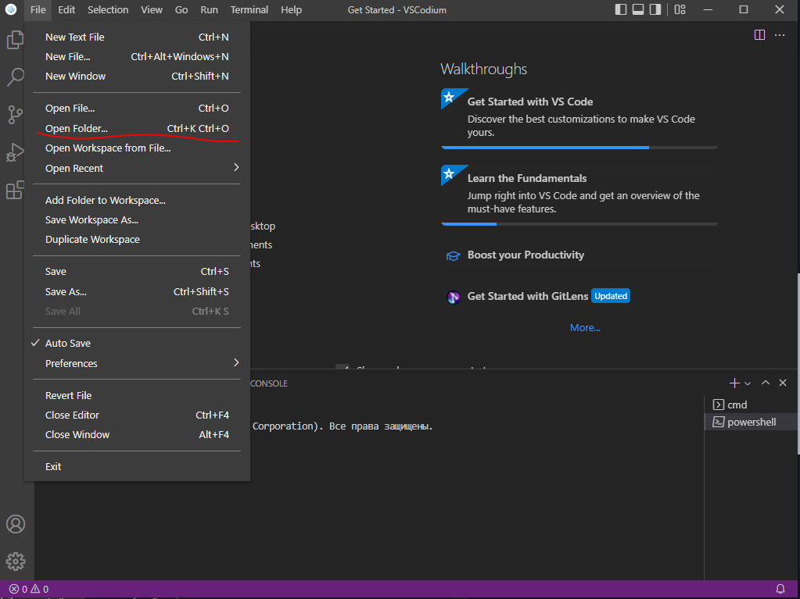
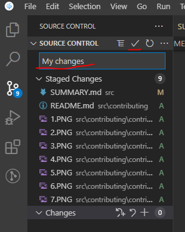
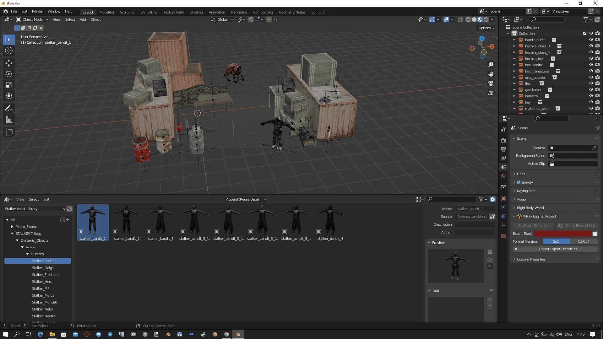
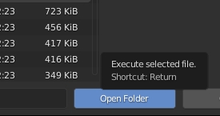
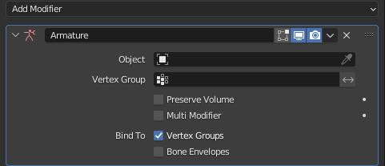
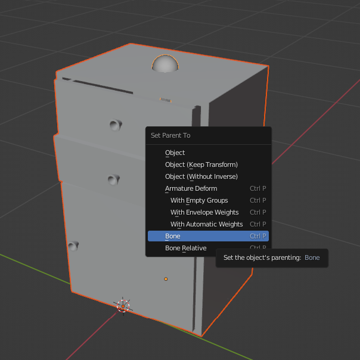

Introduction
Oh hey there! Nice to see you :)
This place will introduce you to the concepts of modding Anomaly, from installing your first mod to creating your own game-changing addons.
Choose a chapter from our table of contents and start reading. I recommend starting with Mod Organiser guide. If you want to contribute - feel free to send your articles (markdown-formatted) per Discord or learn the hard way to contribute.
Good luck, have fun, don't die
Igigog#6387
Meta
Links
Contributing to this book
This book is written using mdBook. To contribute to this book, you will need:
VSCodium or VSCode is highly recommended to use. Although it is optional, I will assume you are using it.
Below I describe the setup steps needed to run and contribute to this book. But before that, go and install VSCodium and Git.
Forking book repository
Contributing to this book follows the standart "Pull Request" workflow. That basically means that you will have your own copy of the book, and you will ask us to pull your changes into the main repository.
Here is the overview of steps needed for contributing:
- Copy ("fork") the main repository
- Download your copy of repo
- Add your changes to your copy
- Upload your changes
- Open the Pull Request to merge your changes into main repository
Welp, let's get started. I hope you already have a GitHub account.
Forking
- Go to the main repo
- Press the fork button

- Create the fork

- You're awesome
Downloading your repo
- Open the folder you want to download into in VSCodium. In my case, it will be Desktop.

- Open Poweshell Terminal session
- Copy the link to your repo.

- Run the following command in your Powershell Terminal with your link instead of LINK.
git clone LINK
- You're awesome.
Running local copy
- Download latest mdbook from Github Releases.
- Drop
mdbook.exein the root folder of your copy. - Run
run.bat. In case it doesn't open by itself, open localhost:3000 in your browser. - Done. You're awesome.
Uploading your changes
-
Set your git up. Here's a great guide
-
Add your changes using VSCodium git tab. Open git tab, hover over "Changes" line and press "+".

- Add a nice message and press "✔" to commit your changes

- You should now be able to publish your changes

Creating Pull Request
- In main book repository, open "Pull Requests" tab and press "New pull request"

-
Press "compare across forks". Choose your repository and press "Create pull request".
-
You're awesome. Probably. Now ping Igigog#6387 in Discord to get your pull request reviewed.
-
Done. Your changes are added to the main book.
Acknowledgements
During the development of this book, information was taken from many sites and forums. Here are the main ones:
Getting Started
Installing MO2
This guide is meant to show you how to setup Mod Organizer 2 and how to mod Anomaly in a simple and easy way step by step.
Made by Starcry

What makes Mod Organizer 2 the superior mod manager?
-
Installed addons never touch your original game files, instead they are injected into the game only when you boot it up by utilizing virtual file system.
-
Mod list is easily manageable, unlike with JSGME you can update or make changes to any addons at any time, without the need of enabling/disabling.
-
Shows you which mods are conflicting in details.
Important note: Many antivirus softwares will block MO2 and Anomaly files causing you to have strange crashes, the reliable solution is to scan your MO2 folder for safety, then set an antivirus exclusion to the entire MO2 folder (and to your Anomaly folder).
Installation and instance setup
- Download the latest version of MO2 (Scroll down, download the .exe and install it)

- After getting this error and clicking "OK" select "Create a portable instance" and press next.


- Click "Browse..." and select your S.T.A.L.K.E.R Anomaly folder, name the instance whatever you want and click next.

- The next page will show you where you'r mods and other files for Anomaly mods will be stored, you can leave it as it is and click next.

- Click next again as linking an account to Nexus is not needed.

- After that you should see something like this.

- Congratulations, you paired MO2 with Anomaly successfully. After you click finish MO2 will start up.
Small tutorial
After MO2 boots up you will get 2 popups, one is for an optional tutorial and the other one is for Nexus which we won't need.

In case you skipped the tutorial or didn't fully understand it here's a quick explanation of the most important features:
-
Red highlight shows what you need to click to install addons. -
Yellow highlight shows profiles, you can create how many you want and have different mods enabled on each of them. -
Green highlight shows your virtual game directory, this can be useful for checking which file is being used from which addon. -
Blue highlight is used for starting the game, if you don't start your game with this button your mods won't be activated.

Guide to modding and solving conflicts
On the image below you can see how my MO2 looks, I have a little over 100 addons and a lot of conflicts.

After installing few addons you might notice these icons:
 This little lightning icon with a red minus next to it shows that the addon is being overwritten.
This little lightning icon with a red minus next to it shows that the addon is being overwritten. A lightning icon with green plus means the addon is overwriting another addon.
A lightning icon with green plus means the addon is overwriting another addon. If you see both of these icons it means the addon is overwriting an addon and is being overwritten by one.
If you see both of these icons it means the addon is overwriting an addon and is being overwritten by one. And last is the grey icon, this icon is next to an addon which is being fully overwritten making it redundant.
And last is the grey icon, this icon is next to an addon which is being fully overwritten making it redundant.
To make things work together you need to maintain a load order, that means that you can't just install addons and expect them to all work together, you can start by keeping your load order clean, make some separators (right-click into empty area) like I have in my load order here, after that you can install patches if needed. You can always ask about load orders in the addon-discussion channel.
A good start would be Grok's Community Curated Add-ons List for Anomaly 1.5.1.
Is it better to use a modpack or do everything yourself?
If you are new to modding you might think simply downloading a modpack is the best option, but that might not be the case as most of the time modpacks are the vision of the person who created it - meaning it might have features you won't like and it can be difficult to remove them, you also can't know if it works fine as it's all packed into one folder.
Using a modpack will also mean you won't be able to get help from the community with your crashes as only the modpack creator knows what changes were made and you'll have to rely on them to help you.
Most of the time modpacks aren't being updated frequently and it's near impossible to install any other addon with them.
Solving conflicts
Most of the time it's pretty easy because most popular addons already have existing patches, for example if you wanted to install Boomsticks and Sharpsticks with JSRS you would put BaS first, then JSRS files and then the patch for JSRS that comes with BaS.
Making patches yourself (Not recommended for beginners)
What if there is no patch available and the addons won't work together? You either have to choose which one you want or you can make a patch yourself, the best guide for that is Anomaly modding resource made by community member Jack-it.
Installing addons the right way
Remember that every addon you install needs to have only one gamedata folder, if you find an addon with many optional files you need to install it again every time and select only one gamedata.
As you can see in the picture below I get a popup when trying to install JSRS because it has multiple files, select one and install it, then do it again with the second file (Applies for every addon).

In case you get this popup instead of the one above, you need to expand the filetree and have only option selected, after that you rightclick it and press "set as stalker directory"


In case MO2 crashes when clicking on "manual" addon installation add this text to file ModOrganizer.ini found in Modding/Mo2/:
[CompletedWindowTutorials]
InstallDialog=true
Reporting crashes
Please ignore this if you are using a modpack and report any crashes to the modpack "creator".
If your game crashes and you don't know what caused it go to addon-discussion in Anomaly discord and post your load order along with a log from appdata/logs, it will be a text file named "xray_username".
Converting from JSGME to Mod Organizer 2
To do this you simply have to delete your "gamedata" folder (This will not delete your saves and MO2 will recreate the folder for you) and install the addons you had with MO2, if you don't want to reinstall them you can simply copy the contents of MODS folder to User/AppData/Local/ModOrganizer/Name of your instance/mods.
If you installed addons manually you also need to delete your gamedata folder.
Additional info
If you have any ideas what I should change, fix or add in this guide feel free to ping me on discord (Starcry#4447)
Inspired by lazy stalker guide.
Link to my patreon here ( ͡° ͜ʖ ͡°).
{kind=link}
Credits:
d_nan: did absolutely nothing
Caesar_salad: also did absolutely nothing

Addon installers
Courtesy of RavenAscendant#7504
MO2 supports 2 kinds of installers. BAIN is the simpler. For BAIN to work you put the gamedata folder for for the main mod into a folder thats name starts with 00. Patches would then go in folders with subsequent numbers. These folders should all be at the root level of the archive.
Example: addon.zip
00 Main
01 BAS patch
02 Optional thing
Files in folders with higher numbers will overwrite those in folders with lower numbers.
BAIN installers present as a list of check boxes. Folders with 00 will be checked by default, all others will be unchecked. Folders at the root of the archive without numbers will not show up in the installer and not be installed.
DNPCAV uses BAIN.
The second is FOMOD Fomod installers can be made to look like a facy windows installer, have preview images, descriptions of what each component does. There is a tool that can help you build a FOMOD installer.
A fomod installer can be built using any folder structure, even the messy one you use now. Or the structure of a BAIN.
Mags Redux has a FOMOD installer but a pretty messy file structure.
SidHUD uses FOMOD but has a BAIN file structure.
DLTX
About:
Improvement of the engine to allow overwriting .ltx files, avoiding addon conflicts. Allows modders to overwrite only the values they need.
Installation
Back up the contents of your "bin" folder and replace it with the one supplied. The contents of "tools" and "example_mod" include optional resources to make mods for DLTX or to convert existing ones. If you are using Mod Organizer 2 do NOT use it to install DLTX (you can still use it for other mods), you need to paste the files into your real "bin" folder.
Use by modders:
In order to make a differential change to the LTX records, you have to follow these steps:
-
Find out which root LTX file is loading the variable you are trying to modify. You can either search the files manually and trace back the chain of #includes, or you can use LTXDiff for this purpose.
LTXDiff findroot [Base Folder] [Mod Folder] [Relative Path to File] -
Once you have found the root file, create a new one in the same directory with the name "mod_[name of the root file]_[name of your choosing].ltx".
-
Make an entry for the section and variable that you want to modify. The section that you want to override has to be prefixed with "!", e.g. ![medkit]. You do not need to include the sections parents again (i.e. do ![medkit], NOT ![medkit]:booster_multi), since they already are in the base definition. Now simply list your variables that you want changed as you usually would.
You can add parents by declaring them like you normally would, or remove them by prefixing them with "!", e.g. "![vodka2]:!vodka, medkit" makes vodka2 behave like a medkit instead of its original parent.
If you want to delete a variable, simply add a line "!variable_name". You can delete sections too, by prefixing them with "!!", however they will only be deleted if all variables they own are deleted too, otherwise the flag won't come into effect.
You can only override sections that already have a base definition. Both loading an override without a base section, or loading multiple base sections will cause crashes. Multiple overrides can be applied to the same section. If multiple mods override the same value, the one that is loaded last will win the conflict over that particular variable. I haven't verified what actually affects the load order, but I'm going to guess it's probably based on the alphabetic order of the file names.
Converting already existing mods
LTXDiff is capable of automatically converting conventional mods into a DLTX-ready format.
Mod suffix in this case is the name that gets appended to the mod files, like in step 2 of the previous section.
Sources
Monkey patching
Courtesy of RavenAscendant#7504
All code snippets used in the guide are licensed under a Creative Commons Attribution-NonCommercial-ShareAlike 3.0 Unported License
This guide is specifically written for modding Anomaly. Much of it will apply with minor changes to any STALKER modding. The concept is not limited to STALKER or even lua, Minecraft modding makes extensive use of monkey patching in Java.
Monkey patching is the practice of modifying code at run time. Instead of modifying the script file directly the modifications are done in memory by a second script. The primary reason for doing this in Anomaly is compatibility. If two addons are distributed with an edited version of the same Anomaly game script the two addons will be incompatible without patch. Worse than incompatible they will most likely cause crashes if installed together. Monkey patching doesn’t guarantee compatibility, if two addons change the same thing in different ways it is unlikely to behave properly, however the likelihood of crashing is significantly reduced.
First a caution, it is always better to simply use call backs. There are a significant number of call backs that allow you to change the way Anomaly plays. Editing Anomaly scripts directly or by monkey patching should only be done if there is no other way. Once one script starts changing the flow of another it becomes significantly harder to figure out what is actually going on.
In general Anomaly scripts are loaded in alphabetical order. When you monkey patch a script that hasn’t loaded you force it to load. If two monkey patches are applied the script that comes last wins. Starting the name of your script with a z means that it will load after most other scripts. While only sometimes necessary and very rarely problematic, the strong suggestion to do so in an earlier version of this guide has resulted in a convention of starting monkey patch scripts with z or zzz.
If a function or variable in a script is declared as local other scripts can’t manipulate it. None of the below techniques will work on local functions or variables.
Patching Variables
The simplest monkey patch only changes variables. Instant tooltip does this. It uses a callback to watch for the inventory UI being opened and when it is changes the delay for the tool tip:
function on_game_start()
RegisterScriptCallback("GUI_on_show", delay_change)
end
function delay_change(name, path)
--return quickly if not the GUI we want
if not (name ~= "UIInventory") then return end
ui_inventory.GUI.item_info.delay = 80
ui_inventory.GUI.upgr_info.delay = 80
end
The changes can be far more complex, an example of reaching into a complex nested table is how SidHud adds itself into the game settings UI with its inject_options_UI() function.
Patching existing Callbacks
The next method is unregistering a Callback. The most obvious use of this is to stop a game script Callback from being run at all so that you can completely replace its functionality, however there are some more fine tuned uses. The order in which Callbacks from various scripts are run is not something that can be relied upon. If you have something that needs to happen before or after a game script Callback the most reliable method is to unregister the games Callback and then call the function directly from your own Callback at the correct timing. Similarly you can use this method to prevent a Callback from running in particular cases. Such as preventing itms_manager.script from creating a half eaten chocolate bar when a chocolate bar is used:
function on_game_start()
UnregisterScriptCallback(("actor_on_item_use", itms_manager.actor_on_item_use)
RegisterScriptCallback("actor_on_item_use", test)
end
function test(obj)
if (obj:section() == "chocolate") then return end
itms_manager.actor_on_item_use(obj)
end
The above code has an example of the fact that functions are variables like any other, they can be passed to a function just like a number. They can also be assigned to another variable name just like a number and a function name can be assigned a new value, new code. It is this feature of lua that allows the most powerful monkey patching to work.
Patching Functions
The same way that scriptname.function can be used to call a function in another script it can also be used to save a copy of that function, this can be used to shorten a long function name
ga = utils_item.get_ammo
ga(section, id) -- this is the same as utils_item.get_ammo(section, id)
The scriptname.function syntax can also be used to assign new code (example from first version of Headlamp Animation Fix).
base_Hit_TorchToggle = actor_effects.Hit_TorchToggle
function actor_effects.Hit_TorchToggle()
local animation_setting = axr_main.config:r_value("options","video/player/animations", 1)
if animation_setting then
base_Hit_TorchToggle()
else
item_device.toggle_torch()
end
end
The order there is important. It is necessary to save a copy of the old function first, before you modify it, if you plan on using it later.
Now when any script calls actor_effects.Hit_TorchToggle() it will call the above function instead.
It is important to understand that no matter what name you give a function it can only access local variables in the script it is written in.
Patching xray/luajit “classes”
TL;DR: lua oop doesn’t use classes, but, for reasons, X-Ray’s lua does and we can patch either or both the classes or the instance objects. What the : (colon) operator really does. The : operator in lua is simply a shortcut. Any function defined with a : can be called without it.
foo:start()
foo.start(foo)
Those are equivalent.
Similarly a function can be defined without it.
function foo:start()
…
end
function foo.start(self)
…
end
When calling a function the : acts like . but also passes the table to it’s left as an invisible first parameter to the function on the right.
When defining a function : acts like . but also inserts the variable self at the beginning of the parameter list. This syntax allows lua oop to have a familiar syntax.
LUAJit Classes TODO
Some closing notes.
Dealing with local.
Sometimes you can get lucky if you dig a bit deeper. Actor_effects.actor_on_item_use is declared local. Not only can you not change it, you also cannot unregister the callback that it is assigned to. However all Actor_effects.actor_on_item_use does is call Actor_effects.play_item_fx(obj:section()) which is not local. Actor_effects.actor_on_item_use can be modified or disabled by patching Actor_effects.play_item_fx. (Be careful tho, that particular function is called from other places as well, and if you don’t want to disable them then you may need to get very creative or are out of luck.)
When it comes to local variables it may be possible to calculate them yourself in your script, this is very easy for constants, harder for things that change, but if you really need to monkey patch yourself into every function that changes that variable and duplicate the calculations before calling the original function, this should keep your copy in step with the original. Watch out for side effects.
If any Anomaly Devs are reading this I strongly recommend that all Callback functions be made not local to allow for unregistering them. TBH i’d like to see local only used for function scoped variables with all globals and functions available from outside the script.
Main Folders And Files
This section describes the main files and folders for the game
Folders
Appdata
This is where the game logs are created and stored (log of loading objects, textures, etc.)
This is where game saves are created and stored. Inside are files with the extensions .scop and .scoc.
This is where game screenshots are created and stored
This is where the game shader cache is created and stored
Gamedata
Folder with files from any game in the S.T.A.L.K.E.R. series. Initially it does not exist explicitly, all game data is "embedded" in the game, but when you install modifications and even patches the directory will be created. Gamedata overrides standard game files: if there are no files in it, often their base versions are used.
Textures Folder
This folder usually contains textures.
Objects Folder
Path to the folder with the original 3D objects and animations. Usually found in the X-Ray SDK in the rawdata\objects folder.
Files
This file describes the game settings.
This file is in the X-Ray SDK and stores the directory paths.
This file stores surface materials.
Library of light animations.
Particle Systems.
Sound Environment.
Database of the shaders used by the graphics engine.
Database of shaders used by the layer compiler
Contains paths to all textures
This file contains descriptions of the shader settings. EShader is the engine shader, which is responsible for the appearance of the surface.
This file contains descriptions of the settings used by the level geometry compiler (xrLC.exe). CShader is a compilation shader, specifying to the level compiler the properties of the final (game) level geometry. The source geometry, depending on the compiler shader, may have no visible or tangible (for collisions) geometry, have a different way of storing lighting, etc.
File Formats
This section describes the extensions that are found in the game files and the SDK.
| Extension | Description |
|---|---|
| .ai | AI location grid. Created by xrAI when compiling. Opened only by the game. |
| .anm | A set of coordinates, which works as an animation of the actor's camera movement. It is also used for anomalies, which need to be given a path. |
| .avi | Video file |
| .bones | Skeleton data in SDK format |
| .bump | Normal map in A(BGR) format |
| .bump# | File that fixes DXT compression errors in .bump |
| .cform | Geometry for calculating collisions. Calculated by the level compiler. Contains a solid map structure. All tangible objects with materials live here. Thanks to it, the game knows with what sound and property the objects should react when they are hit by bullets or walked on. |
| .db | archive of game resources. Used in late builds and the final version of the game, has several options (db."number", db."letter"). |
| .dds | Graphic file used by DirectX to store textures |
| .details | Detailed objects (grass, cigarette butts, construction debris) on the level. Created through LevelEditor SDK at compile time. |
| .dm | Effect of a dynamic weather environment (e.g., rain or lightning) |
| .efd | Table of AI heuristic parameters, contains constants for fine-tuning A-Life. They are used as input parameters in scripts. |
| .env_mod | local environment modifiers (environment), set areas on the location with lighting different from the main weather cycle. |
| .err | Geometry errors |
| .fog_vol | Volumetric fog |
| .game | Coordinates of the player's spawn in the multiplayer game. Outdated file. |
| .geom | Contains vertices (position, normals, texture coordinates, etc.), indices, and information for smooth geometry detail. |
| .geomx | It contains only geometry. In the renderer it is used in the shadow rendering passes, due to the fact that there is less information - loading data into the buffers - faster. |
| .graph | Global graph of AI navigation. Used, among other things, for moving AI objects outside the active level. |
| .gtc | Cross table of correspondence between the location graph and the AI grid. It is created when compiling the map in LE KFK (xrAI). |
| .hom | Mapping of hierarchical cutoffs |
| .level | List of SDK scene objects |
| .lights | Light sources for xrLC |
| .log | Event log. It contains records of program start, operation and termination |
| .ltx | Configuration file, custom ini-like format |
| .object | These files are intended for the X-Ray SDK to store 3D content in its original, uncompressed, lossless form. They are source files that store information before compilation into other game compressed formats. |
| .ogf | Compiled objects |
| .ogg | The sound format used by the game engine. |
| .ogm | The video format used by the game engine. |
| .omf | A specialized S.T.A.L.K.E.R. game format containing animations. This is a separate dedicated file used in conjunction with .ogf models. Was created in order to optimize process when some different models use the same list of animations. |
| .ppe | Postprocess file format. |
| .ps_static | Particle systems. Flies, steam from pipes, etc. |
| .scop | Save file. |
| .scoc | Save file. |
| .script | Game script. |
| .seq | Text file containing a description of the frame sequence in the 2D animation |
| .skl | Skeletal animation |
| .skls | Skeletal animations(.skl) in a container |
| .snd_env | Volumetric sound sources. |
| .snd_static | Static point sources of sound. Sound of flies, etc. |
| .som | Geometry for calculating sound propagation. |
| .spawn | A file storing spawn data. |
| .tga | A bitmap graphics format with support for color depth of 1-32 bits per pixel, alpha channels, and RLE compression. Used as a source format. |
| .thm | They are used to set the parameters of textures - bump, detail, and more. |
| .wallmarks | Decals. Bloodstains, faction emblems on walls, etc. Used for the compiled level. |
| .wav | Source audio format for later setup and conversion to .ogg |
| .xml | Carry in text format data related to in-game text, UI element placement, and characters and information within the game world. |
| .xrdemo | Recording camera flyover (demo). Created in the game with a console command. |
| level | File with general information about the game location (light sources, object names, texture and shader names, sectors and portals). Created by xrLC during compilation. Opened only by the game. |
.anm (Animated paths)
About:
A set of coordinates, which works as an animation of the actor's camera movement. It is also used for anomalies, which need to be given a path.
Technical information:
- Order of rotation: YXZ
Interpolation types:
- TCB
- BEZIER_2D
- BEZIER_1D
- LINEAR
- HERMITE
.BUMP
About
The bump map is a regular normal map in A(BGR) format (typical for DXT5_nm compression format). The developers used this order for a very simple reason - DXT compression "spoils" the texture much less, since the alpha channel is not subjected to compression and remains almost in its original form.
Format
- R - Glossiness (Glossiness, aka inverted roughness. It works best in stalker, and allows for using better BRDF)
- G - Normal Z (Unused in Anomaly 1.6.0)
- B - Normal Y (DIRECTX format.)
- A - Normal X
The engine currently supports the following compressions:
- DXT5
- BC7
.bump#
About:
Corrects DXT compression errors in .bump and is generated only with SDK
Format
- RGB - Error correction for normal map (bump.dds) - Not necessary if you're using good quality normal map. It's generated with SDK
- A - height map; used for parallax, if the use of it was turned on when setting up the texture
The engine currently supports the following compressions:
- DXT5
- BC7
.DDS (DirectDraw Surface)
About:
DDS is most often used to store textures and is used in many 3D applications, as well as in modern 3D games. It allows you to store textures both in compressed and uncompressed form.
Format
- RGB - Diffuse colour
- A - Alpha (Used for translucent/transparent shaders like glass/grass)
The engine currently supports the following compressions:
- DXT1
.dm (Detail Model)
About:
Effect of a dynamic weather environment (e.g., rain or lightning)
Technical information:
It works like this: UV descends down the Y coordinates to the texture

Format limitations
- Must have one material
- Does not support antialiasing
.Object
About:
These files are intended for the X-Ray SDK to store 3D content in its original, uncompressed, lossless form. They are source files that store information before compilation into other game compressed formats.
Technical information:
The format can store the following basic data (the list is not complete):
- meshes
- materials
- bones
- skeleton animations
Possibilities and limitations of the .object format
One *.object file can store:
- one or more meshes if it has no skeleton and only one meshes if it has a skeleton
- one or more materials
- a skeleton can be absent, or it can hold at least one
- a skeleton can store a minimum of 1, a maximum of 64 bones (for X-Ray SDK 0.4)
- skeleton animations may not be present, or one or more animations may be stored
- skeleton animations do not support Scale keys
- each mesh can have one or more materials
- each mesh must have one UV scan
- each material can store only one texture
Sources
.OMF (Open Motions Format)
About:
A specialized S.T.A.L.K.E.R. game format containing animations. This is a separate dedicated file used in conjunction with .ogf models. Was created in order to optimize process when some different models use the same list of animations.
Example:
stalker_scripts_animation.omf
Technical information:
They are in RIFF format. That is, the file is divided into chunks. The omf file consists of two chunks:
-
0xE - stores animations (rotation, movement of bones)
-
0xF - stores the Bone Parts and animation parameters.
These chunks can be found inside the ogf files. In other words, an omf file is a slice of an ogf file that is moved to an external file. The structure of the 0xE and 0xF chunks in ogf is identical to those in omf.
The structure of the 0xE chunk
This chunk consists of nested chunks. The first nested chunk is the one with the identifier 0x0. The zero chunk stores an unsigned 32-bit integer number. This number indicates the number of animations in the omf file. The identifier of each subsequent chunk is one more than the previous one. That is, 0x0 is followed by 0x1, then 0x2, 0x3, etc. All the chunks following 0x0 contain animations. Description of the nested chunk that stores the animations The animation name comes first, which is a string ending with a null byte. Next is an unsigned 32-bit integer, which specifies the number of animation frames. The following data is the dice transforms. For each bone, rotation, movement, and flags are stored. Flags come first. Flags is an unsigned 8 bit integer. The first bit of this byte indicates if the movement is modifiable. If the bit is 1, then the movement has values throughout all frames. If the bit is 0, then the movement has only one value for the entire animation interval. This is done to optimize it so that it doesn't store a bunch of identical keys, but instead has a single value. The second bit of this byte indicates whether the rotation is static (not changing throughout the animation). The third bit is the High Quality flag. If it is 0, then the position has an 8-bit representation, otherwise it is 16-bit. Next comes the information about the rotation. What will be written to the file next depends on the flags. If the second bit of the flag is 0, the file will contain the following: One rotation value as a quaternion with two-byte signed components. That is, QXYZ, each 2 bytes, for a total of 8 bytes. And if the second bit of the flag is 1, then the following follows: crc32 sum as a 4 byte unsigned integer. And after that come the rotation quaternion values for each frame. The format of rotation is the same as described above (the same 8 bytes). Now comes the movement information. If the first bit of the flag is 1, then follows a 32-bit unsigned integer, which is the crc32 sum. This is followed by three eight-bit numbers, which indicate the position of the bone on the x, y, z axes. These positions are written for each frame. That is, the positions should be read in a loop, which is repeated as many times as the number of frames contains the animation. After all these positions are data about the initial conditions of movement: Amplitude or size of movement. These are three float numbers (4 bytes each). And then there is the initial value of movement. These are also 3 float numbers. These initial conditions are stored in a single instance for each bone in this animation. That is, these values do not change throughout the animation. If the first bit of the flag is 0, there is one move value for all frames. This movement is stored in 3 float numbers (4 bytes each).
Below is a pseudocode that describes one animation:
name = string
length = uint32
for bone in bones {
flags = uint8
translate_present = flags(0) // get bit 0
rotate_absent = flags(1) // get bit 1
high_quality = flags(2) // get bit 2
if rotate_absent {
quaternion = int16, int16, int16, int16 // Q, X, Y, Z
} else {
motion_crc32 = int32
for (i=0, i<length, i++) {
quaternion = int16, int16, int16, int16 // Q, X, Y, Z
}
}
if translate_present {
motion_crc32 = int32
if high_quality {
for (i=0, i<length, i++) {
translation = int16, int16, int16 // X, Y, Z
}
} else {
for (i=0, i<length, i++) {
translation = int8, int8, int8 // X, Y, Z
}
}
translate_size = float, float, float // X, Y, Z
translate_init = float, float, float // X, Y, Z
} else {
translate = float, float, float // X, Y, Z
}
Chunk structure 0xF
Stores bone parts and animation parameters. The code that describes this chunk is shown below:
params_version = uint16 // parameter format version
partition_count = uint16 // number of bone parts
for (i=0, i<partition_count, i++) {
partition_name = string // name of the bone part
bone_count = uint16 // number of bones in this bone part
for (j=0, j<bone_count, j++) {
if params_version == 3 {
bone_name = string // bone name
bone_id = uint32 // bone ID
}
}
motion_count = uint16 // number of animations
for (j=0, i<motion_count, j++) {
// animation parameters
motion_name = string
motion_flags = uint32
bone_or_part = uint16
motion = uint16 // animation identifier from the 0xE chunk
speed = float32
power = float32
accrue = float32
falloff = float32
}
}
Sources
HOM (Hierarchical Occlusion Mapping)
About:
HOM is a geometry cutter, which is a mesh and is needed to increase performance. This file is created during level compilation.
Technical information:
Blocks
Consists of two blocks:
| Block ID | Size (bytes) | Description |
|---|---|---|
| 0x0 | 4 | header (contains information about the format version) |
| 0x1 | number of polygons * 40 | vertex coordinates and polygon properties |
Block description
Block 0x0 (header)
| Type | Description |
|---|---|
| I | format version |
Block 0x1 (mesh data)
Contains the data of the triangles, which are written one by one.
The data is for one triangle:
| Type | Description |
|---|---|
| fff | 3D coordinates of the first vertex of the triangle |
| fff | 3D coordinates of the second vertex of the triangle |
| fff | 3D coordinates of the third vertex of the triangle |
| I | two sided option |
Possible values of the "two sided" option: 0x0, 0x1
The polygon indices are not saved, but they can easily be generated, since all vertices are saved so that the polygon indices are in ascending order.
The first triangle will be: 0, 1, 2, second: 3, 4, 5, third: 6, 7, 8, etc.
Sources
.EFD (Evaluation Function Data)
About:
Table of AI heuristic parameters, contains constants for fine-tuning A-Life. They are used as input parameters in scripts.
Example
anomalydetectprobability.efd
[values]
offset_0: value_0 = 1
offset_4: value_1 = 1
offset_8: value_2 = 2
offset_12: value_3 = 8
offset_16: value_4 = 3
offset_20: value_5 = 49
offset_24: value_6 = 9
offset_28: value_7 = 79
offset_32: value_8 = 20
offset_36: value_9 = 100
offset_40: value_10 = 1
offset_44: value_11 = 2
offset_48: value_12 = 0
offset_52: value_13 = 1
offset_56: value_14 = 19.9940643310547
offset_60: value_15 = 59.9821968078613
offset_64: value_16 = 99.9703216552734
offset_68: value_17 = 19.9940643310547
offset_72: value_18 = 59.9821968078613
offset_76: value_19 = 99.9703216552734
offset_80: value_20 = 29.9910984039307
offset_84: value_21 = 59.9821968078613
offset_88: value_22 = 89.9732894897461
offset_92: value_23 = 69.9792251586914
offset_96: value_24 = 74.9777450561523
offset_100: value_25 = 84.9747772216797
offset_104: value_26 = 89.9732894897461
offset_108: value_27 = 89.9732894897461
offset_112: value_28 = 89.9732894897461
offset_116: value_29 = 79.9762573242188
offset_120: value_30 = 79.9762573242188
offset_124: value_31 = 79.9762573242188
offset_128: value_32 = 79.9762573242188
offset_132: value_33 = 79.9762573242188
offset_136: value_34 = 79.9762573242188
offset_140: value_35 = 39.9881286621094
offset_144: value_36 = 49.9851608276367
offset_148: value_37 = 79.9762573242188
There is a function in xrgame.dll where all files with this extension are opened. But then not all of them are used.
Sources
.SEQ (Sequence)
About:
Text file that is used to create a simple animation texture, by recording a sequence of "frames" and a playback speed.
Example
15
ui\ui_ani_cursor_01
ui\ui_ani_cursor_02
ui\ui_ani_cursor_03
ui\ui_ani_cursor_04
ui\ui_ani_cursor_05
Order in which the textures are played will be 1234512312312345
cycled
15
ui\ui_ani_cursor_01
ui\ui_ani_cursor_02
ui\ui_ani_cursor_03
ui\ui_ani_cursor_04
ui\ui_ani_cursor_05
In this case, because of "cycled" the playback order will be 1234543212345432123454321 Speed of texture change is set in numerical format before the enumeration
The number of textures in the list is arbitrary, but the more frames, the greater the load on the engine, respectively. The name of the file is set by the name of the assigned texture (without taking the extension into account). If there is a *.dds file in the folder with the same name as the *.seq file, the engine ignores the original texture, giving priority to the *.seq file. The priority of file search by extension is as follows:
- .ogm
- .avi
- .seq
- .dds
Parameters
- The "cycled" parameter is optional if you want to loop from the first texture to the last texture and from the last texture to the first texture. If you don't write it, it will play in a normal circular loop.
- Playback speed (frames per second) (written before the list of textures)
Sources
.THM
About
They are used to set the parameters of textures - bump, detail, and more. Without them the game does not give textures the necessary parameters, and therefore they are obtained "flat", worse than the static lighting.
Shaders List
About:
These sections describe the shader lists used for the game
Materials List
About:
This section contains a list and description of the shaders that are available in the gamemtl.xr file. This file stores surface materials.
List
Materials of the creatures
| Materials of the creatures | Description |
|---|---|
| creatures\actor | person (actor) |
| creatures\hoof | mutant with hooves |
| creatures\human | human (NPS) |
| creatures\human_head | human |
| creatures\large | big mutant |
| creatures\medium | medium mutant |
| creatures\phantom | phantom |
| creatures\small | little mutant |
Static object materials
| Static object materials | Description |
|---|---|
| default | standard static material |
| material\asphalt | asphalt |
| material\bricks | brick wall |
| material\bush | bushes, tree crowns, reeds, leaves |
| material\bush_sux | bushes, tree crowns, reeds, leaves, but dried out, or dead |
| material\cloth | fabric |
| material\concrete | monolithic concrete |
| material\death | Passable material that kills the character (non-standard material) |
| material\dirt | wet mud, swamp |
| material\earth | dry, hard earth (standard material) |
| material\earth_death | standard static material |
| material\earth_slide | standard static material |
| material\fake | collision material (no sound, no bullet marks, no shadows) |
| material\fake_ladders | invisible ladder |
| material\fake_ladders_woods | invisible wooden ladder |
| material\fake_slide | |
| material\flooring_tile | tile, ceramic tile |
| material\glass | glass |
| material\grass | fabricground covered with grass |
| material\gravel | gravel |
| material\metal | solid metal, thick piece, tank |
| material\metall_pipe | metal pipe |
| material\metal_plate | metal plate, steps |
| material\occ | occlusion geometry material |
| material\sand | sand, embankment |
| material\setka_rabica | barbed wire |
| material\shifer | slate |
| material\stucco | stucco |
| material\tin | tin, roof of houses |
| material\tree_trunk | wood (trunk) |
| material\water | water |
| material\water_radiation | radiation water |
| material\wood | wooden surface, floor wooden steps |
| material\wooden_board | wooden board, wooden wagon, box |
Dynamic object materials
| Dynamic object materials | Description |
|---|---|
| default_object | standard dynamic material |
| objects\barrel | barrel |
| objects\bolt | |
| objects\bottle | bottle |
| objects\bullet | bullet, grenade fragment |
| objects\car_cabine | car body |
| objects\car_wheel | car wheels |
| objects\clothes | rag, clothes |
| objects\concrete_box | concrete block |
| objects\dead_body | dead human body |
| objects\fuel_can | gasoline canister |
| objects\glass | broken glass |
| objects\knife | knife |
| objects\large_furnitura | large furniture (chairs, tables, cabinets) |
| objects\large_metal_trash | large pieces of junk metal (fittings, pieces of iron) |
| objects\large_weapon | heavy weapons (assault rifle, grenade launcher, rifle) |
| objects\metal_box | metal box |
| objects\monster_body | dead mutant body |
| objects\shell | |
| objects\small_box | small box (ammo, PDA, first aid kit) |
| objects\small_metal_trash | small metal trash (tubes, pieces, nuts, bolts) |
| objects\small_weapon | small weapon (pistol) |
| objects\tin_can | tin can |
Shaders List
About:
This section contains a list and description of the shaders that are available in the shaders.xr file. This file contains descriptions of shader settings.
List
Shaders for static objects
| Shaders for static objects | Description |
|---|---|
| zfill | |
| xwindow | |
| selflight | self-lighting material |
| glass | |
| friendly_indicator | |
| font | |
| default_pn_hm | |
| default_pn | |
| default_hm | |
| default | basic lightmap shader |
| clouds |
ufp Shaders
| ufp_shaders | Description |
|---|---|
| ufp_blend |
Test Shaders
| test | Description |
|---|---|
| test\aaaaaaaa__ | |
| test\aass |
Sky Shaders
| sky | Description |
|---|---|
| sky\background | |
| sky\clouds | |
| sky\clouds_old | |
| sky\skydome |
Particles Shaders
| Particles | Description |
|---|---|
| particles\add | |
| particles\alpha_add | |
| particles\blend | |
| particles\dark | |
| particles\set | |
| particles\xadd | |
| particles\xblend | |
| particles\xdistort |
Shaders for dynamic objects
| Shaders for dynamic objects | Description |
|---|---|
| models\antigas_glass | CubeMap reflection shader (variant 1) |
| models\artefact | CubeMap reflection shader (variant 2) |
| models\artefact2 | CubeMap reflection shader (variant 3) |
| models\artifact-anim-env | |
| models\glass_stalker_refl | |
| models\lfo_black_lens_weapons | |
| models\lfo_black_soft_lens_weapons | |
| models\lfo_glass_lens_weapons | |
| models\lfo_light_dot_weapons | |
| models\lightplanes | self-lighting material with translucent and falloff effect |
| models\mirror | |
| models\model | basic shader |
| models\model_aref | transparency. alpha test - trans (with gradients) |
| models\model_fur | transparency. alpha test - aref (no gradients) |
| models\hm | |
| models\pn | |
| models\pn_hm | enable tesselation on models (DX11 only) |
| models\pautina | material with transparency and falloff effect |
| models\selflight | basic self-lighting material |
| models\seftlight_det | |
| models\selflightl | self-lighting material with lower intensity |
| models\transparent | transparency |
| models\water | |
| models\water_ryaska | |
| models\weapons | CubeMap reflection shader (variant 4) |
| models\window | semi-transparent shader with CubeMap reflection |
| models\xanomaly | |
| models\xdistor | |
| models\xdistorcolor | |
| models\xdistorcolorl | |
| models\xdistorinv | |
| models\xmonolith | |
| models\xwindows |
Levels Shaders
| levels | Description |
|---|---|
| levels\agroprom_asfalt | terrain shader (asphalt) |
| levels\agroprom_grass | terrain shader (grass) |
| levels\agroprom_gravel | terrain shader (gravel) |
| levels\bar_asfalt | |
| levels\bar_asphalt | |
| levels\bar_grass | |
| levels\bar_gravel | |
| levels\darkcape_asfalt | |
| levels\darkcape_grass | |
| levels\darksc_asfalt | |
| levels\darksc_grass | |
| levels\darkvalley_asfalt | |
| levels\darkvalley_grass | |
| levels\darkvalley_sand | |
| levels\dead_city_asfalt | |
| levels\dead_city_grass | |
| levels\dead_city_ground | |
| levels\deadcity_asfalt | |
| levels\deadcity_earth | |
| levels\dead_city_grass | |
| levels\escape_asfalt | |
| levels\escape_asfalt_noblend | |
| levels\escape_grass | |
| levels\escape_sand | |
| levels\garbage_asfalt | |
| levels\garbage_earth | |
| levels\garbage_grass | |
| levels\generator_asfalt | |
| levels\generator_earth | |
| levels\generators_art | |
| levels\hospital_grass | |
| levels\hospital_sand | |
| levels\jupiter_asfalt | |
| levels\jupiter_earth | |
| levels\jupiter_grass | |
| levels\jupiter_plates | |
| levels\l01_escape_asfalt | |
| levels\l01_escape_asfalt_noblend | |
| levels\l01_escape_detritus | |
| levels\l01_escape_grass | |
| levels\l01_escape_sand | |
| levels\limansk_asfalt | |
| levels\limansk_earth | |
| levels\limansk_grass | |
| levels\maedow_asfalt | |
| levels\maedow_grass | |
| levels\maedow_sand | |
| levels\marsh_earth | |
| levels\military_asfalt | |
| levels\military_grass | |
| levels\military_sand | |
| levels\pripyat_asfalt | |
| levels\pripyat_earth | |
| levels\pripyat_gras2 | |
| levels\pripyat_grass | |
| levels\radar_asfalt | |
| levels\radar_grass | |
| levels\red_forest_asfalt | |
| levels\red_forest_earth | |
| levels\red_forest_grass | |
| levels\red_forest_leaves | |
| levels\red_forest_sand | |
| levels\stancia | |
| levels\stancia_asfalt | |
| levels\stancia_build_kanal | |
| levels\stancia_kanal | |
| levels\truckscemetery | |
| levels\truckscemetery_asfalt | |
| levels\truckscemetery_grass | |
| levels\yantar_asfalt | |
| levels\yantar_earth | |
| levels\zaton_asfalt | |
| levels\zaton_cracked | |
| levels\zaton_earth | |
| levels\zaton_earth_2 | |
| levels\zaton_grass | |
| levels\zaton_pebbles | |
| levels\zaton_plates | |
| levels\zaton_sand |
HUD Shaders
| hud | Description |
|---|---|
| hud\add | |
| hud\add-alpha | |
| hud\cursor | |
| hud\default | |
| hud\fog_of_war | |
| hud\hitmarker | |
| hud\p3d | |
| hud\set | |
| hud\seta |
Flora Shaders
| flora | Description |
|---|---|
| flora\leaf_wave | |
| flora\trunk_wave |
Effects Shaders
| Effects | Description |
|---|---|
| effects\bullet_tracer | |
| effects\flame | |
| effects\flare | |
| effects\fx_refl_pod | |
| effects\glow | |
| effects\lightning | |
| effects\lightplanes | |
| effects\moon | |
| effects\rain | |
| effects\screen_add | |
| effects\screen_blend | |
| effects\screen_noise | |
| effects\screen_set | |
| effects\shadow | |
| effects\shadow_blur | |
| effects\shadow_world | |
| effects\sun | |
| effects\wallmark | |
| effects\wallmarkblend | |
| effects\wallmarkmult | |
| effects\wallmarkset | |
| effects\water | pure water shader |
| effects\waterryaska | crayfish shader |
| effects\waterstuden | swamp shader |
| effects\watertest | |
| effects\watertest-1 |
SDK Shaders
| editor | Description |
|---|---|
| editor\ai_node | |
| editor\do_base | |
| editor\selection | |
| editor\spawn_icon | |
| editor\wire |
Details Shaders
| details | Description |
|---|---|
| details\blend | |
| details\lod | |
| details\set |
Def_Shaders
| def_shaders | Description |
|---|---|
| def_shaders\def_add | |
| def_shaders\def_aref | |
| def_shaders\def_aref_v | |
| def_shaders\def_objects_lod | |
| def_shaders\def_objects_lod_trans | |
| def_shaders\def_refl_alpha | |
| def_shaders\def_refl_alpha_heli | |
| def_shaders\def_refl_trans | |
| def_shaders\def_trans | |
| def_shaders\def_trans_v | |
| def_shaders\def_trans_v_tuchi | |
| def_shaders\def_vertex | |
| def_shaders\def_vertex_hm | |
| def_shaders\def_vertex_pn | |
| def_shaders\def_vertex_pn_hm | |
| def_shaders\lod | |
| def_shaders\lod_old |
Debug Shaders
| debug | Description |
|---|---|
| debug\ai_nodes | |
| debug\wireframe |
Compiler Shaders List
About:
This section contains a list and description of the shaders that are available in the shaders_xrlc.xr file. This file contains descriptions of the settings that are used by the level geometry compiler.
List
| Materials of the creatures | Description |
|---|---|
| default | basic lightmap shader |
| default_smooth | |
| def_shaders\def_ghost | lightmap shader without collision |
| def_shaders\def_ghost_vertex | |
| def_shaders\def_kolizion | |
| def_shaders\def_kolizion_lm | |
| def_shaders\def_kolizion_vertex | special invisible geometry shader |
| def_shaders\def_normals | |
| def_shaders\def_noshadow | |
| def_shaders\def_noshadow_pol | |
| def_shaders\def_object_lod | |
| def_shaders\def_object_lod_collision | |
| def_shaders\def_object_lod_visual | |
| def_shaders\def_selflight | |
| def_shaders\def_translucensy | |
| def_shaders\def_vertex | basic vertex shader |
| def_shaders\def_vertex_ghost | |
| def_shaders\def_vertex_ghost_no_shadow | |
| def_shaders\def_vertex_invisible_castshadow | |
| def_shaders\def_vertex_no_shadow | |
| def_shaders\default_lm01 | |
| def_shaders\default_lm01_ghost | |
| def_shaders\default_lm03 | |
| def_shaders\default_lm03_ghost | |
| def_shaders\default_lm03_smooth | |
| def_shaders\default_lm05 | |
| def_shaders\default_lm05_ghost | |
| def_shaders\default_lm_hq |
LTX files
LTX files are basically ini files with some custom additions. They are located all over the gamedata/configs and are used for, well, configs.
Here's how ltx config might look like:
#include "tables/gun_*.ltx"
[some_nice_gun]
recoil = 0.8
boosts = a, b, c, d ; list
fancy_feature = {=is_night()} true, false
[some_other_gun]
...
From this example we can see some fancy ltx features:
#includepreprocessor command. This command basically merges the file into this config. Many of the configs are included intosystem.ltxthis way, so you can access almost all sections throughini_syshandler.- Wildcard imports -
*in include statement corresponds to any text, so the given include will include bothgun_ak.ltxandgun_m4.ltx. This feature was developed for Anomaly, so you may not find it in other mods. - Name of the section in square brackets - this is referred in scripts as
section_nameor justsection. - Key-value pairs. Values may include comma-separated lists.
- Comments start with
;. fancy_featureuses something called "condlist". Refer to condlists manual to understand this bs.
XML files
XML files are used to save text strings used for translation. All XML files are located in gamedata/configs/text/*lang*. XML files have these properties:
- They are saved in encoding Windows-1251. English translation won't break if you're using UTF, but russian will.
- Every string must have an unique id assigned to it.
- There is a single namespace for all xml files of one language. That means, no matter in which file you are saving your strings, they will be available in one place, namely
game.translate_string(*id*).
XML file will look something like this:
<?xml version="1.0" encoding="windows-1251"?>
<string_table>
<string id="nice_text_id">
<text>Cool text inside text tags</text>
</string>
<string id="another_text_id">
<text>...</text>
</string>
...
</string_table>
Condition Lists Tutorial
Courtesy of tdef#6225 Transfered to modding book by demonized#1084
Condition list or condlist is one way to write dynamic configuration files and have this structure:
somefile.ltx
[some_section]
my_condlist = {=A(a1:a2) !B +C -D ~30} X %=E(e1) +F -G%, Y
and are used like this:
somescript.script
local ini = ini_file("path\\to\\somefile.ltx")
local condlist = ini:r_string_to_condlist("some_section","my_condlist")
local result = xr_logic.pick_section_from_condlist(game_object_1, game_object_2, condlist)
the code above is the equivalent of:
if -- {
xr_conditions.A(game_object_1, game_object_2, {"a1","a2"}) and -- =A(a1:a2)
not xr_conditions.B(game_object_1, game_object_2) and -- !B
db.actor:has_info("C") and -- +C
not db.actor:has_info("D") and -- -D
math.random(1,100) > 30 -- ~30 (not a typo, ~30 means 70% chance, ~80 means 20% and so on)
then -- }
result = "X" -- X
-- %
xr_effects.E(game_object_1, game_object_2, {"e1"}) -- =E(e1)
db.actor:give_info_portion("F") -- +F
db.actor:disable_info_portion("G") -- -G
-- %
else -- ,
result = "Y" -- Y
end
Condlist can have more than one condition block:
my_condlist = {-A -B} X, {-A +B} Y, Z
this is the equivalent of:
if
not db.actor:has_info("A") and
not db.actor:has_info("B")
then
result = "X"
elseif
not db.actor:has_info("A") and
db.actor:has_info("B")
then
result = "Y"
else
result = "Z"
end
All condlist elements are optional, these are all valid condlist:
cond1 = ;returns nil
cond2 = true ;returns "true"
cond3 = %=f% ;returns nil and executes xr_effects.f(a,b) --> remember that a and b depend on the arguments of pick_section_from_condlist
cond4 = {-info1} , %=f1% ;if actor doesn't have info1 then returns nil, else returns nil and executes xr_effects.f1(a,b)
cond5 = {+info1} %=f1% ;same effect of previous one but easier to read
The return value can be ignored to use condlist as a way to run functions listed from a config file, one example are the on_complete lines in task manager files:
on_complete = %=reward_stash(true)%
this condlist has no condition (the part inside {}) and no return value, so calling
xr_logic.pick_section_from_condlist()
on this is the equivalent of just calling
xr_effects.reward_stash(x, x, {"true"})
Remember that both the return on pick_section_from_condlist and arguments passed to xr_conditions and xr_effects functions are strings and not boolean/numbers
Some config lines are condlist even if they aren't obvious, for example one line can be
something = true
but in reality it's a condlist that always returns "true", the only way to know for sure it's to search for "something" in all scripts and see if that config line is parsed as condlist anywhere.
Condlist can be also be parsed from a string
local condlist1 = ini:r_string_to_condlist("some_section","my_condlist")
local somestring = ini:r_string_ex("some_section","my_condlist")
local condlist2 = xr_logic.parse_condlist(game_object, string1, string2, somestring)
condlist1 and condlist2 are the same, the first 3 arguments of xr_logic.parse_condlist are used only to print a message if the 4th (the actual condlist string) is nil, or just use alun_utils.parse_condlist(string)
Now we examine some condlist in Anomaly, what they mean and some examples of edits we can make.
Example 1
near the end of tm_dynamic.ltx in configs/misc
[simulation_task_52]
icon = ui_inGame2_PD_Torgovets_informatsiey
storyline = false
prior = 120
sim_communities = army, bandit, csky, dolg, ecolog, freedom, killer, stalker
repeat_timeout = 14400
precondition = {=random_chance(100)} true, false
title = simulation_task_52_name
descr = simulation_task_52_text
descr_functor = general_fate_desc
job_descr = simulation_task_52_about
task_complete_descr = simulation_task_52_finish
stage_complete = 4
target_functor = general_fate
status_functor = fate_task
condlist_0 = {!task_giver_alive(simulation_task_52)} fail
on_job_descr = %=on_init_fate_task(simulation_task_52:detector_radio:broken_pda:k01_darkscape:k02_trucks_cemetery:y04_pole:l06_rostok:zaton:jupiter:pripyat)%
on_complete = %=inc_goodwill_by_tasker_comm(simulation_task_52:50) =reward_stash(true) =reward_random_money(10500:18500) =reward_random_item(beer:vodka:vodka2:cigarettes_lucky_3:cigarettes_russian_3) -simulation_task_52_dead_spawned -simulation_task_52_item_spawned -simulation_task_52_target_found =remove_quest_item(simulation_task_52) =forget_dead_npcs(simulation_task_52) =pstor_reset(simulation_task_52)%
on_fail = %=remove_quest_item(simulation_task_52) -simulation_task_52_dead_spawned -simulation_task_52_target_found -simulation_task_52_item_spawned =forget_dead_npcs(simulation_task_52) =pstor_reset(simulation_task_52)%
if we change precondition line to
precondition = {=is_rain} true, false
then npc will propose this quest only if you ask them while it's raining
if we change it to
precondition = false
then npc will never give this quest
true and false dont have any special meaning in the condlist on their own, in this case they matter only because the code that parses the condlist spelled out by the precondition line does different things depending on the pick_section_from_condlist return value
if we change on_complete to
on_complete = aslkdjslakd %=inc_goodwill_by_tasker_comm(simulation_task_52:50) =reward_stash(true) =reward_random_money(10500:18500) =reward_random_item(beer:vodka:vodka2:cigarettes_lucky_3:cigarettes_russian_3) -simulation_task_52_dead_spawned -simulation_task_52_item_spawned -simulation_task_52_target_found =remove_quest_item(simulation_task_52) =forget_dead_npcs(simulation_task_52) =pstor_reset(simulation_task_52)%
everything will still work as before, because the code that runs the pick_section_from_condlist on on_complete does nothing with the return value, so if it's nil, random text, true/false or whatever doesn't matter
Example 2
inside devushka.ltx in configs/scripts/escape
[walker@devushka]
path_walk = guard_2_walk
path_look = guard_2_look
on_info = {=surge_started} walker@surge
on_info2 = {=is_night} walker@sleeper_1
on_info3 = {=is_rain} walker@rain
combat_ignore_cond = {=actor_enemy =check_enemy_name(actor)} false, false
combat_ignore_keep_when_attacked = {=is_warfare} false, true
reach_distance = 10
gather_items_enabled = false
help_wounded_enabled = false
corpse_detection_enabled = false
invulnerable = {=is_warfare} false, {!actor_enemy} true, false
on_game_timer = 2400 | remark@smoking_stand
we change on_info3 to
on_info3 = {=is_rain =is_actor_enemy_to_faction(freedom)} walker@rain
now Hip will seek shelter from rain only if we are enemy to Freedom, women be like that sometimes
Custom conditions
if you want to make custom conditions either create new functions inside xr_conditions or make your own script file defining functions inside xr_conditions scope
my_conditons.script
function xr_conditions.has_more_money_than(a,b,c)
-- a and b will be the game objects given as arguments to the xr_logic.pick_section_from_condlist call that evaluates this condlist
-- most of the times a will be the actor game object and b one npc game object, but unless you're 100% sure of that (after testing or looking which pick_section_from_condlist parses it and with which arguments)
-- dont ever rely on those, i've seen cases where b is a server object or even nil
local amount = c and c[1] and tonumber(c[1])
-- c is a table where condlist arguments for the function are passed
-- so has_more_money_than(10000) means c[1] == "10000" (a string!)
-- so we need to convert it to a number to be able to compare it to another
if amount then
return db.actor:money() > amount
end
return false
end
now we have has_more_money_than available as conditions for condlist, now we can do
on_info = {=has_more_money_than(50000)} walker@surge
so Hip will stay outside during blowouts unless we have more than 50k rubles
you can do the same with xr_effects
my_effects.script
function xr_effects.give_tuna_to_actor(a,b,c)
alife():create('conserva',vector(),0,0,0)
end
then change on_info2 to
on_info2 = {=is_night} walker@sleeper_1 %=give_tuna_to_actor%
and when Hip goes to sleep you'll get a tuna can
w_Weapon.ltx Config File
Parameters of the weapon are set for each sample in a separate *.ltx file, and consist of two sections (Each contains its own set of parameters):
[wpn_name] - Main, it sets most of the parameters (for NPC and 3rd-person view).
[wpn_name_hud] - Secondary, where you set first-person view parameters only.
Parameters of the world model
[wpn_name]: Here you can set additional characteristics of weapon from sections for example:
identity_immunities - a section that contains damage parameters for different game difficulty levels
weapon_probability
default_weapon_params
General parameters
| Parameter Name | Parameter Description | Example value | Parameter Possible Values and their descriptions |
|---|---|---|---|
| GroupControlSection | spawn_group | ||
| $npc | use NPC of this weapon | on | on (Yes) - off (No) |
| $prefetch | preload queue | 8 | |
| $spawn | the Weapon Directory in the Level Editor | "weapons\ak-74" | "weapons\ wpn_name" |
| scheduled | online/offline switch; Works only for "live" objects with AI | off | on (Yes) - off (No) |
| cform | parameter for dynamic objects; necessary for correct creation of the skeleton model | skeleton | |
| parent_section | wpn_akm | ||
| class | engine weapon class | WP_AK74 | WP_BINOC - WP_KNIFE - WP_BM16 - WP_GROZA - WP_SVD - WP_AK74 - WP_LR300 - WP_HPSA - WP_PM - WP_RG6 - WP_RPG7 - WP_SHOTG - WP_ASHTG - WP_MAGAZ - WP_SVU - WP_USP45 - WP_VAL - WP_VINT - WP_WALTH - W_STMGUN |
| animation_slot | animation slot number | 2 | 1 (pistol) - 2 (automatic rifle) - 3 (rifle, shotgun) - 4 (RPG) - 5 (knife) - 7 (bolt, grenade) - 8 (submachine gun with integrated underbarrel grenade launcher) - 9 (Shotgun) - 10 (Drum Gun) - 13 (binoculars) |
| hand_dependence | determines whether the weapon will be taken with one or two hands | 1 | 0 (no hands) - 1 (one hand) - 2 (two hands) |
| single_handed | held with one hand | 0 | 0 (no) - 1 (yes) |
| default_to_ruck | whether the weapon will be moved to the backpack instead of the slot when picked up | false | true (yes) - false (no) |
| sprint_allowed | this line means that you can run with the weapon | true | true (Yes) - false (No) |
| kind | The type of item to group into the appropriate section in the Item Spawner | w_rifle | |
| cost | base price | 28780 | Specified in numbers |
| hud | section with parameters for the hud model of the weapon (1st person view) | wpn_akm_hud | Specifies the name of the section |
| visual | reference to the 3rd person model | dynamics\weapons\wpn_akm\wpn_akm.ogf | Specifies the path to the file |
Position and Orientation of Weapons
| Parameter Name | Parameter Description | Example value | Parameter Possible Values and their descriptions |
|---|---|---|---|
| position | position of the weapon in the hands of the NPC and the headspace when viewed from the 3rd person | -0.026, -0.175, 0.0 | x - left/+right, y + up/down, z - forward/+backward |
| orientation | orientation | how the weapon is rotated in the hands of the NPC and headgear, in the 3rd person view | 0, 0, 0 |
| fire_point | coordinates of the fire particle from the shot, in the 3rd person view | 0, 0.218, 0.656 | x - left/+right, y + up/down, z - forward/+backward |
| fire_point2 | Coordinates of the fire particle from the shot, when viewed from the 3rd person from the holster | 0, 0.161, 0.583 | x - left/+right, y + up/down, z - forward/+backward |
| strap_bone0 | the name of the first NPC model bone where the weapon is located when hidden | bip01_spine2 | Bone Name |
| strap_bone1 | The name of the second NPC model bone that holds the weapon when hidden | bip01_spine1 | Bone Name |
| strap_position | the position of the weapon on the NPC's back, when viewed from the third person | -0.26, -0.11, 0.25 | x - left/+right, y + up/down, z - forward/+backward |
| strap_orientation | how the weapon is rotated on the NPC's back in 3rd person view | -15, -9, 110 | x - left/+right, y + up/down, z - forward/+backward |
Weapon parameters in inventory
| Parameter name | Parameter description | Example value | Possible parameter values and their descriptions |
|---|---|---|---|
| icons_texture | |||
| inv_grid_height | icon height | 2 | number of 50x50 pixels cells |
| inv_grid_width | icon width | 5 | number of 50x50 pixels cells |
| inv_grid_x | the coordinate of the upper left corner of the icon on a 50x50 pixel grid on the X axis | 35 | number of cells indented to the right |
| inv_grid_y | The coordinate of the upper left corner of the icon on a 50x50 pixel grid on the Y axis | 0 | number of cells indenting downward |
| inv_name | The name in the inventory | st_wpn_akm | Section name, in *.xml files included in the string_table section of gamedata\configs\localization.ltx |
| inv_name_short | short name in the inventory | st_wpn_akm | Section name, in *.xml files included in the string_table section of gamedata\configs\localization.ltx |
| inv_weight | the inventory weight of the unloaded weapon | 3.3 | The number is given in kilograms |
| description | Description in inventory | st_wpn_akm_descr | Section name, in *.xml files included in the string_table section of gamedata\configs\localization.ltx |
| slot | Inventory slot number | 2 | 0 (knife) - 1 (gun) - 2 (shotgun, machine gun, rifle, grenade launcher) - 3 (grenade) - 4 (binoculars) - 5 (bolt) |
Parameters for the multiplayer (there is no multiplayer in the game, so the parameters are useless)
| Parameter Name | Parameter Description | Example value | Parameter Possible Values and their descriptions |
|---|---|---|---|
| weapon_class | is used exclusively for the purchase menu in multiplayer | shotgun - assault_rifle - sniper_rifle - heavy_weapon | |
| startup_ammo | startup amount of ammo in multiplayer | The number of rounds of ammunition is indicated | |
| kill_msg_x | the coordinate of the upper left corner of the kill icon on the X axis | ||
| kill_msg_y | top-left corner coordinate of the kill icon on the Y axis | ||
| kill_msg_width | the width of the kill icon | the value is specified in pixels | |
| kill_msg_height | kill icon height | value in pixels |
Particle parameters from the shot
| Parameter name | Parameter description | Example value | Possible parameter values and their descriptions |
|---|---|---|---|
| flame_particles | gunshot fire particle | weapons\generic_weapon05 | Specifies the path to the file |
| smoke_particles | shot smoke particle | weapons\generic_shoot_00 | Specifies the path to the file |
| light_disabled | flash off when shot | false | true (yes) - false (no) |
| light_color | Parameters for changing the color of the shot fire particle | 0.6, 0.5, 0.3 | RGB Color |
| light_range | the radius of the fire partition from the shot | 5 | |
| light_time | time of light playback when shot | 0.2 | |
| light_var_color | Parameter of variation of the color of the fire particle from the shot | 0.05 | RGB Color |
| light_var_range | varies the radius of the fire particle from the shot | 0.5 | Value 60.0 = 10 seconds |
Parameters of the upgrades/repairs
| Parameter name | Parameter description | Example value | Possible parameter values and their descriptions |
|---|---|---|---|
| upgrades | up_gr_firstab_akm, up_gr_seconab_akm, up_gr_thirdab_akm, up_gr_fourtab_akm, up_gr_fifthab_akm, up_gr_fifthcd_akm | ||
| installed_upgrades | installed upgrades | ||
| upgrade_scheme | upgrade_scheme | upgrade_scheme_ak74 | |
| repair_type | item type for repair tools | rifle_7 | pistol - shotgun - rifle_5 - rifle_7 |
Icons of the upgrades
| Parameter name | Parameter description | Example value | Possible parameter values and their descriptions |
|---|---|---|---|
| upgr_icon_x | the X coordinate of the upper left corner of the icon in the repair window | 300 | Specified in pixels |
| upgr_icon_y | top-left corner coordinate of the icon in the Y axis repair window | 0 | Specified in pixels |
| upgr_icon_width | Width of the icon in the repair window | 300 | Specified in pixels |
| upgr_icon_height | icon height in the repair window | 100 | Specified in pixels |
Parameters of the weapon itself
| Parameter name | Parameter description | Example value | Possible parameter values and their descriptions |
|---|---|---|---|
| fire_modes | firing modes fire modes | 1, -1 | -1 (automatic) - 1 (single) - 2 (two-shot) - 3 (three-shot) |
| wallmark_section | section of wallmarks that appear on the ground/geometry when exploding | Section name (by default it is in the system.ltx file) | |
| wm_size | texture size of the mark left on the ground after the explosion | The bigger the number, the bigger the mark | |
| allow_inertion | whether inertia is enabled | true (Yes) - false (No) | |
| ph_mass | the weight of the unloaded weapon for the physical engine | 4 | The number is given in kilograms |
Shot parameters
| Parameter name | Parameter description | Example value | Possible parameter values and their descriptions |
|---|---|---|---|
| hit_impulse | The force that the flying bullet transmits to the victim affects the ragdoll-body behavior | 34 | The more, the farther the body will fly away |
| hit_power | damage dealt | 0.58, 0.58, 0.58, 0.58 | Specifies a value for the level of difficulty in descending order, i.e. from master to beginner |
| hit_type | Type of damage inflicted; used to calculate damage; armor suits (and others) are set to be immune to each type of damage separately | fire_wound | fire_wound (fire damage) - wound (stabbing) - wound_2 (cutting) - explosion (shrapnel damage) |
| fire_distance | effective range of the shot after which the bullet disappears | 900 | Specified in meters |
| bullet_speed | initial bullet speed | 715 | Specified in meters per second |
| rpm | Shooting speed | 600 | Specifies the number of shots per minute |
| rpm_empty_click | Misfire/empty magazine sound frequency | 200 | |
| fire_dispersion_base | The dispersion (angle of the bullets) introduced by the weapon; affects accuracy; added to the disp_base in actor.ltx | 0.45 | Specified in degrees |
| PDM_disp_accel_factor | Multiplier by which fire_dispersion_base is multiplied when the protagonist runs | 2.5 | Specified in numbers |
| PDM_disp_base | Multiplier by which fire_dispersion_base is multiplied when the protagonist is standing at full height | 1.15 | Specified in numbers |
| PDM_disp_crouch | Multiplier by which fire_dispersion_base is multiplied when the protagonist goes crouched | 1.0 | Specified in numbers |
| PDM_disp_crouch_no_acc | Multiplier by which fire_dispersion_base is multiplied when the protagonist stands still while ducking | 1.0 | Specified in numbers |
| PDM_disp_vel_factor | Multiplier by which fire_dispersion_base is multiplied when the protagonist spins a weapon or runs | 2.5 | Specified in numbers |
Ammo parameters
| Parameter name | Parameter description | Example value | Possible parameter values and their descriptions |
|---|---|---|---|
| ammo_class | ammo type for this weapon | ammo_7.62x39_fmj, ammo_7.62x39_fmj_bad, ammo_7.62x39_fmj_verybad, ammo_7.62x39_ap, ammo_7.62x39_ap_bad, ammo_7.62x39_ap_verybad | The names of the ammunition sections are indicated, separated by commas |
| ammo_elapsed | magazine capacity at the moment of spawning | 30 | indicate the value equal to ammo_mag_size |
| ammo_mag_size | ammunition capacity | 30 | The number of bullets is indicated |
Particle shell parameters
| Parameter name | Parameter description | Example value | Possible parameter values and their descriptions |
|---|---|---|---|
| shell_point | coordinates of the shell partylock, when viewed from the 3rd person | 0, 0.216, 0.174 | x - left/+right, y + up/down, z - forward/+backward |
| shell_dir | how the shell particle is rotated when viewed from the 3rd person | 0, 0, 0.4 | x - left/+right, y + up/down, z - forward/+backward |
| shell_particles | shell particle | weapons\762x39 | Particles file path relative to particles.xr |
Aiming parameters
| Parameter name | Parameter description | Example value | Possible parameter values and their descriptions |
|---|---|---|---|
| scopes | Name of the gun sight section | 1p29, kobra, ps01 | Sections to models with these sights are indicated |
| scope_status | Scope status | 0 | 0 (not available) - 1 (built-in) - 2 (removable) |
| scope_zoom_factor | scope magnification | 0 | For the sight specified in the parameter scopes, the value can already be more |
Parameters of the silencer
| Parameter name | Parameter description | Example value | Possible parameter values and their descriptions |
|---|---|---|---|
| silencer_name | Name of the silencer section of the gun | wpn_sil_pbs1 | |
| silencer_status | silencer status | 2 | 0 (not available) - 1 (built-in) - 2 (removable) |
| silencer_light_color | Parameters for changing the color of the particle of the smoke from the shot from the weapon with silencer | 0.6, 0.5, 0.3 | |
| silencer_light_range | the radius of the particle of the haze when firing | 0.01 | |
| silencer_light_time | light time | 0.2 | |
| silencer_light_var_color | Parameter for varying the color of the particle of smoke from a shot from a weapon with silencer | 0.05 | |
| silencer_light_var_range | variation of the radius of the particle of the smoke from the shot from the weapon with silencer | 0.5 | |
| silencer_smoke_particles | particle smoke effect for a shot with silencer | weapons\generic_shoot_00 | Particles file path relative to particles.xr |
Silencer icons parameters
| Parameter name | Parameter description | Example value | Possible parameter values and their descriptions |
|---|---|---|---|
| silencer_x | the coordinates of the silencer icon superimposed on top of the weapon icon on the X coordinate | 235 | Specified in numbers |
| silencer_y | the coordinates of the silencer icon superimposed over the weapon icon in Y coordinate | 10 | Specified in numbers |
Parameters of the underbarrel grenade launcher
| Parameter name | Parameter description | Example value | Possible parameter values and their descriptions |
|---|---|---|---|
| grenade_class | type of underbarrel grenades | ammo_vog-25, ammo_vog-25_bad, ammo_vog-25_verybad | |
| grenade_launcher_name | name of the section of the underbarrel grenade launcher | wpn_addon_grenade_launcher | |
| grenade_launcher_status | the status of the underbarrel grenade launcher | 0 | 0 (not available) - 1 (built-in) - 2 (removable) |
| launch_speed | launch speed of the underbarrel grenade launcher | 0 | |
| grenade_flame_particles | particle of the fire from the underbarrel grenade launcher | weapons\generic_weapon01 | Particles file path relative to particles.xr |
Underbarrel grenade launcher icons parameters
| Parameter name | Parameter description | Example value | Possible parameter values and their descriptions |
|---|---|---|---|
| grenade_launcher_x | grenade launcher icon coordinates superimposed over the weapon icon on the X coordinate | 127 | Specified in numbers |
| grenade_launcher_y | grenade_launcher icon coordinates superimposed over the weapon icon on the Y coordinate | 18 | Specified in numbers |
Aiming parameters
| Parameter name | Parameter description | Example value | Possible parameter values and their descriptions |
|---|---|---|---|
| use_aim_bullet | whether the first bullet fired after a long period of inactivity will fly exactly into the crosshair | false | true (Yes) - false (No) |
| time_to_aim | the time of inactivity after which the use_aim_bullet is triggered | 0.0 | |
| zoom_dof | 0.5, 1.0, 180 | ||
| zoom_enabled | the ability to aim | true | true (Yes) - false (No) |
| zoom_rotate_time | the speed at which the weapon goes to the "aiming" state, in seconds | 0.25 | Specified in seconds |
| reload_dof | 0.0, 0.5, 5, 2 | ||
| control_inertion_factor | Usability; aka inertia; affects how easily the weapon can be controlled with the mouse | 1.0f | |
| crosshair_inertion | 5.8 |
Misfire parameters
| Parameter name | Parameter description | Example value | Possible parameter values and their descriptions |
|---|---|---|---|
| misfire_probability | misfire_probability | maximum wear probability | 0.005 |
| misfire_start_condition | the wear at which there is a chance of misfire | 0.7 | |
| misfire_start_prob | misfire chance of misfire when wear is greater than misfireStartCondition | 0.007 | |
| misfire_end_condition | the chance of misfire when worn out is greater than misfireEndCondition | 0.05 | |
| misfire_end_prob | wear rate at which the chance of misfire becomes constant | 0.11 |
Wear parameters
| Parameter name | Parameter description | Example value | Possible parameter values and their descriptions |
|---|---|---|---|
| condition_queue_shot_dec | condition_shot_dec | 0.0008 | |
| condition_shot_dec | increase wear on each shot | 0.0008 | 0 (no wear) - 1 (maximum wear) |
| fire_dispersion_condition_factor | the effect of wear on the variance of the weapon as a percentage | 0.001 |
Parameters of the camera
| Parameter name | Parameter description | Example value | Possible parameter values and their descriptions |
|---|---|---|---|
| cam_return | Возвращать ли камеру в изначальное положение | 0 | |
| cam_relax_speed | camera return speed | 10 | |
| cam_dispersion | angle increase with each shot | 0.762 | |
| cam_dispersion_frac | barrel will rise by cam_dispersioncam_dispersion_frac +- cam_dispersion(1-cam_dispersion_frac) | 1.0 | |
| cam_dispersion_inc | increase cam_dispersion with each shot | 0.0725 | |
| cam_max_angle | maximum vertical recoil angle | 50.0 | |
| cam_max_angle_horz | maximum horizontal recoil angle | 50.0 | |
| cam_step_angle_horz | barrel shift horizontally during firing | 1.38 |
Parameters of the camera when aiming
| Parameter name | Parameter description | Example value | Possible parameter values and their descriptions |
|---|---|---|---|
| zoom_cam_relax_speed | similar to the return speed of the camera in the aiming mode | 10 | |
| zoom_cam_dispersion | Similar to cam_dispersion in the aiming mode | 0.732 | |
| zoom_cam_dispersion_frac | Similar to cam_dispersion_frac in aiming mode | 0.7 | |
| zoom_cam_dispersion_inc | Similar to cam_dispersion_inc in aiming mode | 0.0625 | |
| zoom_cam_max_angle | Similar to cam_max_angle in aiming mode | 50.0 | |
| zoom_cam_max_angle_horz | Similar to cam_max_angle_horz in aiming mode | 50.0 | |
| zoom_cam_step_angle_horz | Similar to cam_step_angle_horz in aiming mode | 1.28 |
Parameters for AI
| Parameter name | Parameter description | Example value | Possible parameter values and their descriptions |
|---|---|---|---|
| ef_main_weapon_type | NPC weapon type | 2 | 0 (pistol) - 1 (shotgun) - 2 (assault rifle) - 3 (rifle) - 4 (grenade launcher) |
| ef_weapon_type | NPC fire mode | 8 | 5 (fire single shots) - 6 (fire in bursts) - 7 (aim and fire single shots) - 8 (aim and fire (sniper)) - 9 (grenade launcher) |
| cam_relax_speed_ai | 360 | ||
| zoom_cam_relax_speed_ai | 360 | ||
| holder_fov_modifier | NPC angle of view multiplier (eye_fov) with this weapon | 1.0 | Specified in numbers |
| holder_range_modifier | NPC range multiplier (eye_range) with this weapon | 1.0 | Specified in numbers |
| min_radius | |||
| max_radius |
Weapon HUD parameters
[wpn_weapon name_hud]:
| Parameter name | Parameter description | Example value | Possible parameter values and their descriptions |
|---|---|---|---|
| item_visual | Weapon hud-model; 1st person view | anomaly_weapons\wpn_akm\wpn_akm_hud.ogf | File path relative to the gamedata\meshes folder |
| attach_place_idx | 0 | ||
| zoom_hide_crosshair | whether to remove the crosshair when aiming | true | true (Yes) - false (No) |
Parameters of the weapon position
| Parameter name | Parameter description | Example value | Possible parameter values and their descriptions |
|---|---|---|---|
| item_position | weapon position in relation to the arms | 0, 0, 0 | x - left/+right, y + up/down, z - forward/+backward |
| item_orientation | weapon orientation in relation to the arms | 0, 0, 0 | x - left/+right, y + up/down, z - forward/+backward |
Hand parameters
| Parameter name | Parameter description | Example value | Possible parameter values and their descriptions |
|---|---|---|---|
| hands_position | Hands and weapon position | -0.072, -0.15, 0.1 | x - left/+right, y + up/down, z - forward/+backward |
| hands_position_16x9 | Hands and weapon position for 16x9 monitors | -0.072, -0.15, 0.1 | x - left/+right, y + up/down, z - forward/+backward |
| hands_orientation | direction (orientation) of the hands and arms | 0.55, 2.39, 0.15 | x - left/+right, y + up/down, z - forward/+backward |
| hands_orientation_16x9 | direction (orientation) of arms and weapons for 16x9 monitors | 0.55, 2.39, 0.15 | x - left/+right, y + up/down, z - forward/+backward |
Parameters of the weapon HUD position when aiming
| Parameter name | Parameter description | Example value | Possible parameter values and their descriptions |
|---|---|---|---|
| aim_hud_offset_pos | aiming shift | -0.0818, 0.05494, -0.25 | x - left/+right, y + up/down, z - forward/+backward |
| aim_hud_offset_pos_16x9 | aiming hand shift for 16x9 monitors | -0.0818, 0.05494, -0.25 | x - left/+right, y + up/down, z - forward/+backward |
| aim_hud_offset_rot | orientation of the arms with the weapon when aiming | 0.0407, 0.00886, -0.00495 | x - left/+right, y + up/down, z - forward/+backward |
| aim_hud_offset_rot_16x9 | aiming hand orientation for 16x9 monitors | 0.0407, 0.00886, -0.00495 | x - left/+right, y + up/down, z - forward/+backward |
Parameters of HUD weapon position for underbarrel grenade launcher
| Parameter name | Parameter description | Example value | Possible parameter values and their descriptions |
|---|---|---|---|
| gl_hud_offset_pos | gun arm displacement when aiming from the holster | -0.0491, 0.005, -0.155 | x - left/+right, y + up/down, z - forward/+backward |
| gl_hud_offset_pos_16x9 | gun hand offset when aiming from the arming cradle for 16x9 monitors | -0.0491, 0.005, -0.155 | x - left/+right, y + up/down, z - forward/+backward |
| gl_hud_offset_rot | the orientation of the arms with the weapon when aiming from the arming cube | -0.067, 0.0063, -0.02 | x - left/+right, y + up/down, z - forward/+backward |
| gl_hud_offset_rot_16x9 | orientation of the arms with weapon when aiming from the arming cube for 16x9 monitors | -0.067, 0.0063, -0.02 | x - left/+right, y + up/down, z - forward/+backward |
Parameters of HUD arms position for the mode when the weapon is lowered
| Parameter name | Parameter description | Example value | Possible parameter values and their descriptions |
|---|---|---|---|
| lean_hud_offset_pos | The offset of the arms with the weapon when the weapon is lowered | 0, 0, 0 | x - left/+right, y + up/down, z - forward/+backward |
| lean_hud_offset_rot | orientation of the arms with the weapon down | 0, 0, 0 | x - left/+right, y + up/down, z - forward/+backward |
HUD animations parameters
- Idle animations
| Parameter name | Parameter description | Example value | Possible parameter values and their descriptions |
|---|---|---|---|
| anm_idle | Idle animation | ||
| anm_idle_empty | Idle animation of an empty magazine | ||
| anm_idle_aim | Idle animation in aiming mode | ||
| anm_idle_g | Idle animation of a grenade launcher | ||
| anm_idle_g_aim | grenade launcher targeting animation | ||
| anm_idle_w_gl | Idle animation with grenade launcher attached to the weapon | ||
| anm_idle_w_gl_aim | Idle animation with a grenade launcher attached to the weapon when aiming |
- Motion animations
| Parameter name | Parameter description | Example value | Possible parameter values and their descriptions |
|---|---|---|---|
| anm_idle_aim_moving | animation in the aiming mode when moving | The name of the corresponding animation | |
| anm_idle_aim_moving_crouch | Animation in the aiming mode when moving in a crouch | The name of the corresponding animation | |
| anm_idle_moving | motion animation | The name of the corresponding animation | |
| anm_idle_moving_empty | motion animation with an empty magazine | The name of the corresponding animation | |
| anm_idle_moving_crouch_g_aim | crouch walking animation with a grenade launcher attached to the weapon | The name of the corresponding animation | |
| anm_idle_moving_crouch_w_gl_aim | animate walking while crouching with a grenade launcher attached to the weapon while aiming | The name of the corresponding animation | |
| anm_idle_moving_g | The name of the corresponding animation | ||
| anm_idle_moving_g_aim | The name of the corresponding animation | ||
| anm_idle_moving_w_gl | the walking animation with a grenade launcher attached to the weapon | The name of the corresponding animation | |
| anm_idle_moving_w_gl_aim | animate walking with a grenade launcher attached to the weapon while aiming | The name of the corresponding animation | |
| anm_idle_sprint | Running animation | The name of the corresponding animation | |
| anm_idle_sprint_empty | Running animation with an empty magazine | The name of the corresponding animation | |
| anm_idle_sprint_g | The name of the corresponding animation | ||
| anm_idle_sprint_w_gl | running animation with a grenade launcher attached | The name of the corresponding animation | |
| anm_hide | hiding animation | The name of the corresponding animation | |
| anm_hide_empty | Hiding animation with an empty magazine | The name of the corresponding animation | |
| anm_hide_g | The name of the corresponding animation | ||
| anm_hide_w_gl | a hiding animation with an attached grenade launcher | The name of the corresponding animation | |
| anm_show | show animation | The name of the corresponding animation | |
| anm_show_empty | Show animation with an empty magazine | The name of the corresponding animation | |
| anm_show_g | The name of the corresponding animation | ||
| anm_show_w_gl | show animation of pulling out a weapon with a grenade launcher attached | The name of the corresponding animation | |
| anm_bore | Boredom animation | The name of the corresponding animation |
- Weapon animations
| Parameter name | Parameter description | Example value | Possible parameter values and their descriptions |
|---|---|---|---|
| anm_reload | Reloading (When there is still a bullet in the chamber) | The name of the corresponding animation | |
| anm_reload_empty | Reloading | The name of the corresponding animation | |
| anm_reload_g | grenade launcher reload | The name of the corresponding animation | |
| anm_reload_w_gl | reloading of the weapon with a grenade launcher attached | The name of the corresponding animation | |
| anm_shots | Shot animation | The name of the corresponding animation | |
| anm_shot_l | Last shot animation | The name of the corresponding animation | |
| anm_shots_g | underbarrel grenade launcher shot animation | The name of the corresponding animation | |
| anm_shots_w_gl | underbarrel grenade launcher shot animation | The name of the corresponding animation | |
| anm_switch | Animation of switching to alternate firing mode | The name of the corresponding animation | |
| anm_switch_g | Animation of switching to underbarrel grenade launcher firing mode | The name of the corresponding animation |
Parameters of sounds
You can read about the parameters of the sounds here
Parameters of the shells sprite for HUD
| Parameter name | Parameter description | Example value | Possible parameter values and their descriptions |
|---|---|---|---|
| shell_bone | bone which will be considered the origin of coordinates for the shell sprite in 1st person view | wpn_body | Bone Name |
| shell_dir | the offset parameter of the shells after departure, in 1st person view | 0, 1, 0 | x - left/+right, y + up/down, z - forward/+backward |
| shell_point | Coordinates of the bullets ejection point in 1st person view | 0, 0.064, 0.19 | x - left/+right, y + up/down, z - forward/+backward |
Particle sprite parameters for HUD
| Parameter name | Parameter description | Example value | Possible parameter values and their descriptions |
|---|---|---|---|
| fire_bone | the name of the fire particle bone of the weapon hud-model | wpn_body | Bone Name |
| fire_bone2 | wpn_body | Bone Name | |
| fire_point | coordinates of the fire particle, when viewed from the 1st person | 0, 0.051841, 0.535482 | x - left/+right, y + up/down, z - forward/+backward |
| fire_point2 | Coordinates of the fire particles, when viewed from the 1st person when firing the underbarrel grenade launcher | 0, -0.011, 0.553 | x - left/+right, y + up/down, z - forward/+backward |
Camera
| Parameter name | Parameter description | Example value | Possible parameter values and their descriptions |
|---|---|---|---|
| freeelook_z_offset_mul | 0.4 |
Sources
Weapon_Ammo Config File
General parameters
| Parameter Name | Parameter Description | Example value | Parameter Possible Values and their descriptions |
|---|---|---|---|
| GroupControlSection | spawn_group | ||
| discovery_dependency | |||
| $spawn | the ammo directory in the Level Editor | "weapons\ammo\ammo_11.43x23_hydro" | |
| class | engine ammo class | AMMO_S | AMMO_S - S_VOG25 - S_OG7B - S_M209 |
| cform | parameter for dynamic objects; necessary for correct creation of the skeleton model | skeleton | |
| visual | World-model ammo box | dynamics\weapons\wpn_ammo\ammo_1143x23_fmj.ogf | Specifies the path to the file |
| $prefetch | preload queue | 64 | |
| kind | The type of item to group into the appropriate section in the Item Spawner | w_ammo | |
| cost | Base price | 910 | Specified in numbers |
| box_size | number of bullets in a pack | 16 | Specified in numbers |
Ammo parameters in the inventory
| Parameter Name | Parameter Description | Example value | Parameter Possible Values and their descriptions |
|---|---|---|---|
| inv_name | The name in the inventory | ammo-11.43x23-fmj | |
| inv_name_short | short name in the inventory | ammo-11.43x23-fmj_s | |
| inv_weight | inventory weight | .29 | The number is given in kilograms |
| description | Description in inventory | ammo-11.43x23-fmj_descr |
Ammo icon parameters
| Parameter Name | Parameter Description | Example value | Parameter Possible Values and their descriptions |
|---|---|---|---|
| inv_grid_width | icon width | 2 | number of 50x50 pixels cells |
| inv_grid_height | icon height | 1 | number of 50x50 pixels cells |
| inv_grid_x | the coordinate of the upper left corner of the icon on a 50x50 pixel grid on the X axis | 55 | number of cells indented to the right |
| inv_grid_y | The coordinate of the upper left corner of the icon on a 50x50 pixel grid on the Y axis | 11 | number of cells indenting downward |
Parameters of ammo coefficients
| Parameter Name | Parameter Description | Example value | Parameter Possible Values and their descriptions |
|---|---|---|---|
| k_disp | Coefficient of accuracy of the bullet | 0.66 | |
| k_impulse | Pulse coefficient transmitted to the ragdoll-body | 0.55 | |
| k_ap | 0.1 | ||
| k_air_resistance | Bullet air resistance coefficient | 0.8 | |
| k_hit | Bullet kill rate | 1.0 | |
| k_bullet_speed | Bullet velocity coefficient | 1.15 | |
| k_cam_dispersion | Camera dispersion coefficient | 1.0 | |
| k_pierce | Penetration power of a bullet | ||
| k_dist | Range coefficient | 0.75 |
Other parameters
| Parameter Name | Parameter Description | Example value | Parameter Possible Values and their descriptions |
|---|---|---|---|
| tracer_color_ID | 2 | ||
| wm_size | texture size of the mark left on the ground after the explosion | 0.072 | The bigger the number, the bigger the mark |
| impair | Barrel wear coefficient from the bullet | 1.4 | |
| tier | 2 | ||
| buck_shot | Number of components in a bullet, e.g. fractions | 9 | |
| tracer | Is the bullet a tracer | off | on (Yes) - off (No) |
| 4to1_tracer | Will four tracers be combined into one | true | true (yes) - false (no) |
| explosive | Will there be an explosion when touched | false | true (yes) - false (no) |
| disassemble_parts | prt_i_ammo,prt_i_ammo |
Sound parameters
| Parameter Name | Parameter Description | Example value | Parameter Possible Values and their descriptions |
|---|---|---|---|
| snd_on_take | The sound when taking | ammo |
Weapon Sounds Config File
Parameter writing formula
| Sound | Name of the sound | Volume | Delay |
|---|---|---|---|
| Sound | Name of the sound | Volume (0.0 - 1.0) | Delay in seconds |
General parameters
| Parameter Name | Parameter Description | Example value |
|---|---|---|
| snd_draw | Draw Sound | weapons\bino_draw |
| snd_holster | Holster Sound | weapons\bino_holster |
| snd_gyro | sound reduction/increase of zoom | weapons\binoculars_gyro |
| snd_zoomin | the sound of entering the scope | weapons\binoculars_zoomin |
| snd_zoomout | the sound of exiting the scope | weapons\binoculars_zoomout |
| snd_switch | sound of switching firing mode | weapons\ak74\ak74_switch |
| snd_close | weapons\generic_close |
Gunshot sounds
| Parameter Name | Parameter Description | Example value |
|---|---|---|
| snd_shoot | shot sound | weapons\as50\as50_shoot |
| snd_shoot1 | sound of shot 1 | weapons\as50\as50_shoot |
| snd_shoot2 | shot sound 2 | weapons\as50\as50_shoot |
| snd_silncer_shot | silencer shot sound | wpn_m98b_snd_silncer_shot |
| snd_shoot_duplet | The sound of a duplicate shot | wpn_toz34_snd_shoot_duplet |
| snd_shoot_grenade | the sound of the underbarrel grenade launcher | weapons\explo\grenade_launch_explo |
| snd_empty | sound when the magazine is empty | weapons\gen_empty |
Sounds for the detector
| Parameter Name | Parameter Description | Example value |
|---|---|---|
| found_snd | detectors\DA-2_beep1 | |
| catch_snd | detectors\DA-2_beep1 |
Sounds for grenades/grenade launchers
| Parameter Name | Parameter Description | Example value |
|---|---|---|
| snd_explode | the sound of an explosion | grenade_f1_snd_explode |
| snd_checkout | the sound of pulling the pin from a grenade | weapons\generic_checkout |
| snd_open_weapon | the sound of opening the drum/weapon magazine | |
| snd_close_weapon | the sound of closing the drum/weapon magazine | weapons\rg6\rg6_reload_end |
| snd_fly_sound | sound of rocket flight | weapons\rocket_fly |
Reload sounds
| Parameter Name | Parameter Description | Example value |
|---|---|---|
| snd_reload | Sound of not fully reloading | weapons\abakan\abakan_reload |
| snd_reload_empty | the sound of a full reload | weapons\abakan\abakan_reload_empty |
| snd_reload_grenade | sound of underbarrel grenade launcher reload | weapons\gp30\gp30_grenload |
| snd_reload_w_gl | the sound of reloading with the underbarrel grenade launcher on | weapons\ak74\ak74_reload_w_gl |
| snd_add_cartridge | the sound of adding a cartridge | weapons\rg6\rg6_reload |
| snd_bore | the sound of boring | weapons\generic\eastern_bore |
| snd_bore1 | bore 1 sound | weapons\mp5_bore |
Different levels of sound
| Parameter Name | Parameter Description | Example value |
|---|---|---|
| snd_1_layer | weapons\9a91\9a91_shoot | |
| snd_1_layer1 | weapons\9a91\9a91_shoot1 | |
| snd_1_layer2 | weapons\9a91\9a91_shoot2 | |
| snd_1_layer3 | weapons\9a91\9a91_shoot3 | |
| snd_1_layer4 | weapons\9a91\9a91_shoot4 | |
| snd_1_layer5 | weapons\9a91\9a91_shoot5 | |
| snd_1_layer6 | weapons\9a91\9a91_shoot6 | |
| snd_1_layer7 | weapons\9a91\9a91_shoot7 | |
| snd_1_layer8 | weapons\9a91\9a91_shoot8 | |
| snd_2_layer | weapons_distance_shooting_mid\g3sg1_distant | |
| snd_3_layer | weapons_distance_shooting_far\g3sg1_distant | |
| snd_4_layer | weapons_distance_shooting_far\saiga_distant |
o_Outfit.ltx Config File
General parameters
| Parameter Name | Parameter Description | Example value | Parameter Possible Values and their descriptions |
|---|---|---|---|
| GroupControlSection | spawn_group | ||
| $spawn | the Outfit Directory in the Level Editor | "outfit\cs_light_novice_outfit" | |
| cform | parameter for dynamic objects; necessary for correct creation of the skeleton model | skeleton | skeleton |
| discovery_dependency | |||
| class | engine outfit class | EQU_STLK | |
| default_to_ruck | whether the weapon will be moved to the backpack instead of the slot when picked up | true | true (yes) - false (no) |
| sprint_allowed | this line means that you can in outfit | true | true (Yes) - false (No) |
| kind | The type of item to group into the appropriate section in the Item Spawner | o_light | |
| cost | base price | 32340 | |
| community | To which faction the suit belongs | csky | |
| helmet_avaliable | Is a helmet available for this costume | true | true (Yes) - false (No) |
| backpack_avaliable | Is a backpack available for this suit | true | true (Yes) - false (No) |
| can_trade | true | ||
| snd_on_take | outfit |
Outfit parameters in inventory
| Parameter Name | Parameter Description | Example value | Parameter Possible Values and their descriptions |
|---|---|---|---|
| full_icon_name | the icon of the protagonist in a full-suit | npc_icon_svoboda_light_outfit | Not used (used only in the SoC inventory) |
| full_scale_icon | Coordinates of the protagonist icon in full suit | 10, 11 | Not used (used only in the SoC inventory) |
| character_portrait | Portrait of the NPC or protagonist wearing the outfit | ui_inGame2_csky_1_2 | |
| inv_grid_height | icon height | 3 | number of 50x50 pixels cells |
| inv_grid_width | icon width | 2 | number of 50x50 pixels cells |
| inv_grid_x | the coordinate of the upper left corner of the icon on a 50x50 pixel grid on the X axis | 116 | number of cells indented to the right |
| inv_grid_y | The coordinate of the upper left corner of the icon on a 50x50 pixel grid on the Y axis | 0 | number of cells indenting downward |
| inv_name | The name in the inventory | csky_light_novice_outfit_name | |
| inv_name_short | short name in the inventory | csky_light_novice_outfit_name | |
| inv_weight | the inventory weight | 5.48 | The number is given in kilograms |
| description | Description in inventory | csky_light_novice_outfit_description | |
| slot | Inventory slot number | 6 |
Параметры визуала
| Parameter Name | Parameter Description | Example value | Parameter Possible Values and their descriptions |
|---|---|---|---|
| player_hud_section | actor_hud_cs1 | ||
| visual | dynamics\outfit\cs_light_outfit | ||
| actor_visual | actors\stalker_nebo\stalker_nebo_1 | ||
| npc_visual | actors\stalker_nebo\stalker_nebo_1 |
Parameters of the upgrades/repairs
| Parameter Name | Parameter Description | Example value | Parameter Possible Values and their descriptions |
|---|---|---|---|
| upgrades | up_gr_firstab_sunrise_3, up_gr_seconab_sunrise_3, up_gr_thirdab_sunrise_3 | ||
| installed_upgrades | installed upgrades | ||
| upgrade_scheme | upgrade_scheme | up_scheme_sunrise_1 | |
| repair_type | item type for repair tools | outfit | |
| repair_part_bonus | 0.17 |
Icons of the upgrades
| Parameter Name | Parameter Description | Example value | Parameter Possible Values and their descriptions |
|---|---|---|---|
| upgr_icon_x | the X coordinate of the upper left corner of the icon in the repair window | 953 | Specified in pixels |
| upgr_icon_y | top-left corner coordinate of the icon in the Y axis repair window | 365 | Specified in pixels |
| upgr_icon_width | Width of the icon in the repair window | 309 | Specified in pixels |
| upgr_icon_height | icon height in the repair window | 142 | Specified in pixels |
Параметры брони
| Parameter Name | Parameter Description | Example value | Parameter Possible Values and their descriptions |
|---|---|---|---|
| artefact_count | Number of artifact cells initially available | 1 | |
| immunities_sect | Costume Immunities Section | sect_light_novice_outfit_immunities | |
| control_inertion_factor | inertia in the outfit | 1 | |
| use1_functor | gameplay_disguise.menu_patch | ||
| use1_action_functor | gameplay_disguise.menu_patch_action | ||
| additional_inventory_weight | Maximum weight at which the protagonist can walk | 5 | Specified in kilograms |
| additional_inventory_weight2 | Additional carrying weight | 5 | Specified in kilograms |
Параметры, которые влияют на протоганиста
| Parameter Name | Parameter Description | Example value | Parameter Possible Values and their descriptions |
|---|---|---|---|
| bones_koeff_protection | Parameter coefficients of the "persistence" of the protagonist's bones in the suit | actor_armor_cs1 | |
| hit_fraction_actor | General protection | 0.75 | |
| power_loss | Responsible for fatigue | 0.05 | Specified in percent |
| bleeding_restore_speed | Responsible for stopping bleeding | Specified in percent | |
| health_restore_speed | Responsible for restoring health | Specified in percent | |
| power_restore_speed | Responsible for restoring powers | Specified in percent |
Parameters of the wearer's protection against various types of impacts provided by the outfits
| Parameter Name | Parameter Description | Example value | Parameter Possible Values and their descriptions |
|---|---|---|---|
| burn_protection | Protection against fire | 0.145 | |
| shock_protection | Protection against electric shock | 0.96 | |
| radiation_protection | Radiation protection | 0.0025 | |
| chemical_burn_protection | Chemicals Protection | 0.037 | |
| telepatic_protection | Psi Protection | 0 | |
| strike_protection | Strike protection | 0.045 | |
| explosion_protection | Explosion/shrapnel protection | 0.24 | |
| wound_protection | Protection from Wounds | 0.31 | |
| fire_wound_protection | Protection from firearms | 0.25 |
Immunity parameters of the outfits itself
| Parameter Name | Parameter Description | Example value | Parameter Possible Values and their descriptions |
|---|---|---|---|
| burn_immunity | Immunity to fire exposure | 0.25 | |
| chemical_burn_immunity | Immunity to chemical exposure | 0.07 | |
| explosion_immunity | Immunity to effects from explosions/shrapnel | 0.2 | |
| fire_wound_immunity | Immunity to exposure from firearms | 0.075 | |
| radiation_immunity | Immunity to exposure from radiation | 0.0 | |
| shock_immunity | Immunity to exposure to electricity | 0.03 | |
| strike_immunity | Immunity to impact from strikes | 0.0 | |
| telepatic_immunity | Immunity to psi exposure | 0.0 | |
| wound_immunity | Immunity to the effects of wounds | 0.122 |
AI parameters
| Parameter Name | Parameter Description | Example value | Parameter Possible Values and their descriptions |
|---|---|---|---|
| ef_equipment_type | Preference for NPCs | 3 |
Modding Tools And Resources
About:
This section contains a list of tools and resources for modding
Modding Tools
In-game editors
- Item Spawner - Spawn menu for items (Weapons, Outfits, etc)
- Object Spawner - Spawn menu for objects (NPCs, Squads, Anomalys, etc)
- Weather Editor - Editor for setting, saving weather
- Lighting Editor - Weather Lighting Editor
- Weapon HUD Editor - Allows you to customize the HUD of the weapon (position, location of the shot, etc.)
- Weapon Stats Editor - Allows you to adjust the configuration of the weapon (bullet speed, aiming, etc.)
- Outfits Stats Editor - Allows you to customize the configuration of the outfits (protection from different types of damage, etc.)
- Pocket Workshop - Not an editor, but allows you to check the scheme of improvements.
- NPC Logic/Execute - Allows you to edit NPC logic
Toolsets
- AXRToolset - AXRToolset is an AutoHotkey & Lua-based scripting engine that utilizes a Graphical User Interface to display scripted plugins that do various automated tasks. Although the current plugins are designed to aid in the development of S.T.A.L.K.E.R.: Call of Chernobyl, the engine itself can be used to create macros, scripts and other utilities for any application or purpose.
Gamedata Extractors
Software to unpack gamedata
- Universal Extractor 2.0 - Unzips the gamedata from the original trilogy
- db_unpacker.bat (tools/) - Anomaly's internal gamedata extractor, which extracts the scripts and configs files from the .db
- db_unpacker_all.bat (tools/) - An internal gamedata extractor from Anomaly, which extracts all files from .db
Converters
- converter.exe (tools/) - Converts files from one format to another.
- X-Ray Export Tool - A simple exporter of .obj format to various other formats
SDK's
Official SDK with community enhancements:
-
SDK 0.4 (Shadows of Chernobyl)
- SDK 0.4 by Yara - This is a compiled from source SDK 0.4, which has dozens of fixes and improvements.
- SDK 0.4 by YUSHAT
- SDK 0.4 by Political
-
-
SDK 0.7 (Call of Pripyat)(RePack by DaaGuda V2)
-
SDK 0.7 Easy:
- The easiest version, but gamedata and rawdata are excluded from its composition, there are no add-ons.
- For full functionality you will need to unpack gamedata from CoP 1.6.02.
- Weight: 22 MB
-
SDK 0.7 Medium(Win32/Win64):
- The same as Easy, but with rawdata and some additions.
- Just to work fully need to unpack gamedata from CoP 1.6.02.
- Weight: 192.4 MB/190.2 MB
-
SDK 0.7 Full(Win32/Win64):
- The heaviest version, it includes unpacked gamedata, rawdata with sources of CS, CoP objects (excluded objects from rawdata\objects\scenes folder because of its weight)
- Preinstalled add-ons from other suites.
- Weight: 2.64 GB/2.64
-
-
-
Anomaly Unofficial SDK - Unofficial SDK with included fixes
-
SDK 0.8 by Red Panda - This is a port and a small upgrade of the classic 0.7 editor set. A lot of problems with the classic editor were related to the outdated development environment, which did not allow to upgrade it. Imgui was taken as a UI shell, as the easiest ui allowing to create simple forms with one line of code. All 4 editors were taken over.
-
SDK 2.6 beta (Lost Alpha) - Contains the basic editors and tools that were used to create Lost Alpha.
SDK tools
The versions of the SDK tools may differ depending on the version of the SDK itself
- Actor Editor
- Dialog Editor
- Level Editor
- Perticle Editor
- Postprocess Editor
- ShaderEditor
3D packages
3D Packages that have compatibility/addons to work with X-Ray:
-
3Ds Max
-
MilkShape
Textures
-
OXR Texture Tool - This tools purpose is to unpack ui_icon_equipment.dds into separate individual icons so that they can be manipulated individually or merged more easily. This tool is capable of creating a new sprite sheet using the unpacked icons and writing the new geometry values (w,h,x,y) into the system configs. It also allows you to merge up to 4 existing unpacked ui_icon_equipment directories into a single sheet.
-
THM Editor - Utility for editing .thm files without the need to use the SDK
-
THM Editor by Valerok - The THM Editor from i-love-kfc was taken as the basis, finalized and fixed.
-
ThmValidator - Allows you to check the .thm files in the selected directory and automatically fix the most common bugs that occur during manual editing.
-
Paint.net - Most often used to properly compress textures.
Dialogs
- S.T.A.L.K.E.R. Dialog Editor Extended - Allows you to edit and create dialogs.
Sounds
- Audacity
- Sound Attribute Viewer And Tweaker - Simple program that can reduce the work needed to view and/or edit STALKER sound file attributes used by all three STALKER games to determine initial volume, volume drop-off, and sensitivity of NPCs to the sounds.
Animations
- OMF Editor - Tool for working with .omf format.
- OMF Editor by Valerok - Modified tool for working with .omf format.
Models
-
OGF Editor - Tool for working with ogf format
-
OGF Editor by Valerok - Modified tool for working with ogf format
-
MeshToolz - Swiss knife for low-level editing of OGF models. Want to copy a piece of one model to another? Easy. Change texture paths and bindings? No problem. Move and scale an item by snapping it to another bone? No problem. Can work both interactively and in script processing mode.
-
ObjectParamsCopier - Allows you to quickly copy surface settings with the same name from one object file to another
-
OgfRefEditor - Editor of the list of OMFs connected to the model. It is intended primarily for changing the list of OMFs used in hand models, for this purpose it is possible to apply the OMF list to all OGFs in the selected folder
-
BumpGenerator - Intended for DXT compression of bumps together with simultaneous generation of bump#maps (the purpose of which is to correct errors introduced by compression). It works similarly to a similar function in KFK. As input textures, both standard ("blue") bump textures and bump textures used directly in the game with rearranged channels are supported.
-
StalkerWeaponToolKit - Tool for working with weapons
Upgrades
- Upgrades Editor - A visual editor that makes it relatively quick and easy to create weapon upgrade schemes
NPC's
-
NPC Editor - NPC editing tool (Currently not working for Anomaly!)
AI
Decompilers
- Universal ACDC - Perl script, to unpack and pack all.spawn
- gamemtl_xr_cdc
- lanims_xr_cdc
- shaders_xr_cdc
- shaders_xrlc_xr_cdc
- senvironment_xr_cdc
- particles_xr_cdc (Unpacking to binary files only)
- The program requires Perl to be installed.
- You also need stkutils (put it in the folder with the script or in C:\Perl\lib)
Compilers
.db/.xdb archivers
Mod Creating
Formats
THM Editor by Valerok
Program Developer: Valerok
About:
THM Editor by Valerok - The THM Editor from i-love-kfc was taken as the basis, finalized and fixed. Allows you to work with .thm files.

Features
- Supports 99% of thm parameters
Functionality
Hotkeys
- F4 - Open file
- F5 and Ctrl+S - Save file
- F6 - Save as
Buttons
| Button | Description |
|---|---|
| Load | Loads the selected .thm |
| Save | Save .thm |
| Save As | Save as .thm |
| Button | Description |
|---|---|
| Import DDS Params | Adjust .thm to the texture format (texture format can be set incorrectly, so sometimes it is worth adjusting it manually) |
| Generate THM for texture | When you select a basic texture, the program creates a thm with basic properties for it (if a texture with the prefix _bump is found, the thm will set all the necessary flags for using bumps) |
| Button | Description |
|---|---|
| Generate Mip Maps | |
| Has Alpha | |
| Binary Alpha | |
| Alpha Border | |
| Color Border | |
| Fade To Color | |
| Fade To Alpha | |
| Dither Color | |
| Dither Each MIP Level | |
| Diffuse Detail | |
| Implicit Lighted | |
| Detail Bump |
-
Chechboxes
-
Shoc format -
Fields
| Field | Description |
|---|---|
| Image | |
| Cube Map | |
| Bump Map | |
| Normal Map | |
| Terrain |
| Field | Description |
|---|---|
| DXT1 | |
| ADXT1 | |
| DXT5 | |
| 4444 | |
| 1555 | |
| 565 | |
| RGB | |
| RGBA | |
| NVHS | |
| NVHU | |
| A8 | |
| L8 | |
| A8L8 |
| Field | Description |
|---|---|
| None | |
| Use | |
| Use Parallax |
| Field | Description |
|---|---|
| Box | |
| Cubic | |
| Point | |
| Triangle | |
| Quadratic | |
| Advanced | |
| Catrom | |
| Mitchell | |
| Gaussian | |
| Sinc | |
| Bessel | |
| Hanning | |
| Hamming | |
| Blackman | |
| Kaiser |
| Field | Description |
|---|---|
| OrenNayar Blin | |
| Phong | |
| Phong Metal | |
| Metal OrenNayar |
-
Border Color
-
Fade Color
-
Fade Amout
-
Material Weight
-
Detail Scale
-
Texture Width
-
Texture Height
-
Fade Delay
-
Bump Height
-
Detail
-
Bump
-
Normal Map
Sources
Omf Editor by Valerok
Program Developer: Valerok
About:
Modified tool for working with .omf format.

Features
- Multiple omf files
- Clone, delete, save selected animations
- Working with motion marks
- Working with flags
- Ability to save in skls, skl via
- Fix Gunslinger mod animations
- Displaying of bone parts animation, possibility to convert into ltx format for import into SDK
- Hotkeys
- A lot of bug fixes and crashes from the original version.
- Changing of name of bones
- Viewing of Bone parts
Functionality
Hotkeys
- F4 - Open file
- F5 and Ctrl+S - Save file
- F6 - Save as
- Delete - deletes selected animations
Buttons
| Button | Description |
|---|---|
| Load | Loads the selected .omf |
| Save | Save .omf |
| Save As | Save as .omf or .skls or .skl |
| Button | Description |
|---|---|
| Merge With | Merge the file with another .omf |
| Add Anims From | Add animations from other .omf (need to know the name of the animation to be added) |
| Try Repair | Trying to fix an animation file (for example, the animation from Gunslinger Mod) |
| Swap Anim Marks | Open the .omf file, make it the main file and transfer all the motion marks from the old file to the new one in the animation with the same names |
| Rename Bones | Allows you to change the name of the bones |
| Show Bone Parts | Ability to view Bone Parts |
| Button | Description |
|---|---|
| Open Source Code | It will take you to the source code site |
Animation options
| Parameters | Description |
|---|---|
| Motion Name | Animation name |
| Speed | Animation speed |
| Power | The power of animation |
| Accrue | |
| Falloff | |
| Length | Animation length |
| Parameters | Description |
|---|---|
| Stop at End | Animation will stop after playback |
| No Mix | Does not mix animation when switching to other animations |
| Sync Part | |
| Use Foot Steps | |
| Move XForm | |
| Idle | |
| Use Weapon Bone | |
| Has Motion Marks | Adds the ability to use Motion Marks |
| Format | Description |
|---|---|
| Keys | |
| Seconds |
Program parameters
| Parameter | Description |
|---|---|
| Real Time Lenght | Multiplies all visual timers by animation speed |
| Ask for Overwrite | When merging animations will ask to overwrite each animation |
Sources
OGF Editor by Valerok
Program Developer: Valerok
About
Modified tool for working with .ogf format

Features
- Editing textures and model shaders
- Editing Userdata
- Editing Motion Refs
- Editing Bone Names
- Bone materials editing
- Editing Bone weights
- Editing center of mass of bones
- Editing model description
- View complete list of bones
- Integration with OGF Viewer (WIP)
- Saving .ogf in .object, .skl, .skls, .bones formats (list of formats here)
- Viewing the list of embedded animations
- Hotkeys
- Ability to write UserData and MotionRefs chunks (even if the model did not have them before)
- Editing the position and rotation of the bones
- Ability to remove unneeded Motion refs and Userdata chunks
- Fix Gunslinger models (models are fixed automatically when you save them)
- Tools for working with embedded animations
- Integration with OMF Editor for editing parameters of embedded animations
Functionality
Hotkeys
- F3 - Reload file
- F4 - Open file
- F5 or Ctrl+S - Save file
- F6 - Save as
Buttons
| Button | Description |
|---|---|
| Load | Loads the selected .ogf |
| Save | Save .ogf |
| Save As | Save as .object, .skls, .skl or .bones |
| Reload | Reloads the program |
| Exit | Exits the program |
Display information about the loaded OGF
| Field | Description |
|---|---|
| OGF Version | The .ogf version |
| Model Type | Model type |
| Source File | Source file |
| Converter | |
| Creator | Creator |
| Editor | Editor |
| Export Time | Export Time |
| Creation Time | Creation Time |
| Modified Time | Modified Time |
Opens the OGF View with the selected model
Becomes active only after switching to the Motions section.
| Button | Description |
|---|---|
| Delete Motions\Return Last Motions | Deletes the list of animations\returns the last list of animations |
| Edit in OMF Editor | Editing Animations via OMF Editor (First, you must specify the path to the OMF Editor .exe) |
| Replace Motions | Replaces the list of animations with another |
Checkboxes
| Field | Description |
|---|---|
| Create Backup | Creates a backup file |
Sections
Section with texture and shader path editing
Set: [Texture number]
| Field | Description |
|---|---|
| Texture Path: | Path to texture |
| Shader Name: | Shader |
File with userdata
A field with paths for animation
Displays animations that are built into the model
Displays a list of bones and their number
Editing the bone parameter
Bone id: [Bone number]
| Field | Description |
|---|---|
| Bone Name | Bone Name |
| Parent Bone | Parent Bone |
| Material | Material |
| Mass | Mass |
| Center Of Mass | Center of mass |
| Position | Bone position |
| Rotation | Bone rotation |
Sources
Resources
About:
This section contains resources that may be useful for modding. (source models, rawdata from different SDKs, etc.)
Audio
About
Music
All the soundtrack from the original trilogy
List
| Artist | Soundtrack name | Preview |
|---|---|---|
| MoozE | Theme of Escape | Preview |
| MoozE | Stalker_extract (Alternative Version of "Theme of Escape") | Preview |
| MoozE | Theme of Garbage | Preview |
| MoozE | Theme of 'Red Forest' | Preview |
| MoozE | Tunnels | Preview |
| MoozE | Dark Valley | Preview |
| MoozE | Fog | Preview |
| MoozE | Heat | Preview |
| MoozE | S.A.D. | Preview |
| MoozE | Junk | Preview |
| MoozE | Elemental Room | Preview |
| MoozE | Zone Triggers | Preview |
| MoozE | Mutation | Preview |
| MoozE | The Thing | Preview |
| MoozE | Dead Cities Pt.1 | Preview |
| MoozE | Dead Cities Pt.2 | Preview |
| MoozE | Radwind Pt.1 | Preview |
| MoozE | Radwind Pt.2 | Preview |
| MoozE | Anomaly Reborn | Preview |
| MoozE | Cold/Freezing Out | Preview |
| MoozE | Sleeping in Ashes v.1 | Preview |
| MoozE | Sleeping in Ashes v.2 | Preview |
| MoozE | Web Amb#1 | Preview |
| MoozE | Web Amb#2 | Preview |
| MoozE | Web Amb#3 | Preview |
| MoozE | Rads Pt.1 | Preview |
| MoozE | Wasteland (Cut) | Preview |
| MoozE | Wasteland II | Preview |
| MoozE | Res (Cut) | Preview |
| MoozE | Epilogue | Preview |
| MoozE | Battle exp. (Cut) | Preview |
| MoozE | Predator (Cut) | Preview |
| MoozE | Trailer part 1 | Preview |
| MoozE | Trailer part 2 | Preview |
| MoozE | Mud (Cut) | Preview |
| MoozE | Mechanized Patrol | Preview |
| Addaraя | Gurza Dreaming | Preview |
| Atroxis | Credits | Preview |
| Atroxis | Intro part 1 | Preview |
| Atroxis | Intro part 2 | Preview |
| Kaos | Invisible Dangers. Part 1 (Trailer) | Preview |
| Kaos | Invisible Dangers. Part 2 (Trailer) | Preview |
| Alexey Omelchuk | Swamps of Despair | Preview |
| Alexey Omelchuk | Shadows | Preview |
| Alexey Omelchuk | Ghost City | Preview |
| Alexey Omelchuk | Hospital | Preview |
| Alexey Omelchuk | Intro | Preview |
| Alexey Omelchuk | Theme of Zaton. Day | Preview |
| Alexey Omelchuk | Theme of Zaton. Night | Preview |
| Alexey Omelchuk | Theme of Jupiter. Day | Preview |
| Alexey Omelchuk | Theme of Jupiter. Night | Preview |
| Alexey Omelchuk | Theme of Pripyat. Day | Preview |
| Alexey Omelchuk | Theme of Pripyat. Night | Preview |
| Alexey Omelchuk | Combat Theme 1 | Preview |
| Alexey Omelchuk | Combat Theme 2 | Preview |
| Alexey Omelchuk | Combat Theme 3 | Preview |
| Alexey Omelchuk | Combat Theme 4 | Preview |
| Alexey Omelchuk | Outro | Preview |
All the soundtrack from Anomaly
| Artist | Soundtrack name | Preview |
|---|---|---|
| Gates of Morheim | Dying Machine | |
| Gates of Morheim | Mechanical Consciousness | |
| Gates of Morheim | Steel Dawn | |
| Gates of Morheim | Skyways | |
| Gates of Morheim | The Above | |
| Gates of Morheim | Fog | |
| Gates of Morheim | Home |
Models
Blender Stuff
Models
Blender Stalker Asset Library - Library of models to place in Blender

Animations

SDK Rawdats
SDK Rawdatas
Unofficial Anomaly SDK rawdata
Blender
These articles will talk about setting up Blender, creating models, etc.
Blender X-Ray Addon
Blender X-Ray Addon for S.T.A.L.K.E.R Latest Versions
What is blender-xray?
blender-xray is an addon for the 3D blender package (blender.org) that is designed to import/export 3D models and animations from S.T.A.L.K.E.R. (engine - X-Ray Engine).
Supported formats
This table lists the X-Ray file formats that the addon can import/export.
| Extension | Description | Import | Export | Remarks |
|---|---|---|---|---|
| .object | Source objects | + | + | |
| .anm | Animated paths | + | + | |
| .dm | Detailed effect models | + | + | |
| .details | Detailed level models | + | + | |
| .skl | Skeletal animation | + | + | |
| .skls | Skeletal animations in a container | + | + | |
| .bones | Bone data | + | + | |
| .err | Geometry errors | + | + | |
| .level | List of scene objects in the SDK | + | + | |
| level | Game levels | + | + | |
| .ogf | Compiled objects | + | +* | *Experimental |
| .omf | Compiled skeleton animations | + | + |
Compatibility (Below are the versions of blender that support the addon. The addon is not tested in other versions of blender):
2.77 2.78 2.79 2.80 2.81 2.82 2.83 2.90 2.91 2.92 2.93
Remark: The addon also works on versions higher than 3.x
Addon installation and setup
Download the latest version of the addon
Go into Blender. Click "Edit" > Preferences

Add-ons > Install

Сhoose the downloaded version of the addon.
Blender will then notify you that the addon has been successfully installed.
Setup
Find the installed addon in the list of addons.

In order to start setting up and using the addon, you need a little theory.
Presets
Addon settings presets. Intended to save settings, with the ability to switch between them. To create a new preset, you must first configure the addon settings and then click the button to the right with the plus ( ) sign. In the window that appears, specify the name of the preset and click OK. To delete a preset, select it from the list and click on the minus () button.
) sign. In the window that appears, specify the name of the preset and click OK. To delete a preset, select it from the list and click on the minus () button.
Path Settings
These settings specify paths to external files or directories of X-Ray Engine or X-Ray SDK.It is possible to set paths automatically, based on a single parameter. For example, if you specify the gamedata folder in the Gamedata Folder parameter, empty paths (except, fs.ltx File) will be filled in automatically. Automatically filled paths have text (auto) at the end of the name. To change the path manually, you have to click on the button with a wrench ( ). The wrench button will disappear and the folder icon button will be displayed instead. You can then open the file browser using the folder button. In the browser, select the desired folder or file. Or you can change the path in the text box by typing it in from the keyboard. If the path is set manually, its value will not be changed automatically by the addon. To return the automatic path indication, you need to clear the path input field.
). The wrench button will disappear and the folder icon button will be displayed instead. You can then open the file browser using the folder button. In the browser, select the desired folder or file. Or you can change the path in the text box by typing it in from the keyboard. If the path is set manually, its value will not be changed automatically by the addon. To return the automatic path indication, you need to clear the path input field.
Example Path Settings:
Once the paths are installed, the setup is pretty much complete. Already at this stage you can work.
P.S
For even more comfortable work it is recommended to go to the tab "Other" and check the box "Compact Import/Export Menus".

If this option is enabled, the import/export menu will keep the operators in a compact form and will be grouped in one X-Ray submenu.

Creating and setting up a model in Blender
Article author: TheParaziT
This article is about creating a model and setting its parameters
Beginning
- First, familiarize yourself with the limitations and capabilities of the format .object (because you may export to it more often than to .ogf) to avoid errors.
- This article will talk about textures, read an article about creating and preparing them.
Start
Create or download the model you like. Do a UV if you don't have one.
The model itself:

UV:

Texturing
Textures can be created in any program designed for this purpose, or you can simply download them.
Texture:

In STALKER, due to its outdated engine, only the following texture maps are used:
- Color Map (.dds)
- Normal Maps (For Stalker they are used as .bump and .bump#) (The Blender X-Ray addon does not support the .bump format at this time (June 2022).)
So extra texture maps will have to be removed.
Here you need to add your created texture in .dds format
As a result, in the Shader Editor ( ) our textures should look something like this:
) our textures should look something like this:

So after creating the model, the UV and the texture, the setup within Blender begins.
Setting up
First, the model itself will be set up.
You can start by positioning the model over the origin in this way (The "Drop It" addon for Blender is highly recommended for such actions):

Then apply the coordinates with Ctrl + A > All Transform. This will allow us (if you make for example a model library or work in the SDK) to drag and drop the model on the surface.
Next, we need to adjust our model to normal size (so that in the game it will not be big or small). If you have already set up the addon to use and set up the necessary paths to your folders, you need to import into the scene model of some person from the game.
In the N-panel there should be a tab "X-Ray" in it unfolds the list "Viewer" and we click "Open Folder" ( ).
).

The Blender explorer window opens. Go to our unpacked folder with the game files (namely the folder "meshes").
The character models you need are in the "actors" folder, where the faction models are sorted into folders. (More about the structure of folders, main folders and files you can learn here)

Select the desired folder with the models and click on the "Open Folder" button.

Depending on the size of the models in the "Viewer" folder may take longer to open than you would like.
So, "Viewer" is open. It shows all the models in the selected folder. Click on any model and a character model appears in front of us.

Next, we just adjust our model to acceptable proportions.
After fitting, apply transformations to our object.

In the "Viewer" list, we can click on "Close Folder ( )" to close the list of models and the model imported to us in the scene, too.
)" to close the list of models and the model imported to us in the scene, too.
At this point we have to decide what type of model we want to use (static, dynamic, or something else). (About the types of objects you can learn here)
It was decided to make our object dynamic. To do this, you need to create a bone and a vertex group (so that the bone can affect exactly the vertices you choose). Select the model and go to the "Object Data Properties" () tab Image here
Under "Vertex Groups" click on the plus sign (a "Vertex Group" with the name "Group" () will be added) and double-click to rename it (the same name will be needed later for the bone).

The next step is to create a bone (Shift + A > Armature > Single Bone).
To make our model move like the bone in the future, we need to rename the bone to the name that was given to "Vertex Groups" ().

And rename the bone.

Select our object and switch to "Wireframe" mode ( ) ("Z" Button) (this is optional).
Place the bone approximately in the center of the model.
) ("Z" Button) (this is optional).
Place the bone approximately in the center of the model.

After that, apply the bone transformations (Ctrl + A > All Transform).
Select our model and go to the "Modifier Properties" ( ) tab.
) tab.
In the "Modifier Properties" ( ) tab, add the "Armature" modifier (
) tab, add the "Armature" modifier ( ) (Add Modifier > Armature (under Deform)).
) (Add Modifier > Armature (under Deform)).

The modifier has the following necessary items:
- Object (
 )
) - Bind to (
 ) Vertex Groups
) Vertex Groups
In the "Object" ( ) field, select our bone (you can select it with the pipette (
) field, select our bone (you can select it with the pipette ( )).
Also make sure that the checkbox next to "Vertex Grops" (
)).
Also make sure that the checkbox next to "Vertex Grops" ( ) is marked.
These actions allowed us to bond our object and bone, but not yet to the fullest extent.
) is marked.
These actions allowed us to bond our object and bone, but not yet to the fullest extent.
Next step: First select the bone after selecting the model, press Ctrl + P. A list appears, select "Bone". 
This allowed the bone and the model to be fully bonded together. Now when the bone moves or rotates, the model will move with it.
Now you have to set the bone properties for X-Ray.
Select the bone and go to the "Bone Properties" ( ) tab.
) tab.
We see the "X-Ray Engine: Bone" section.

The desired field is "Shape Type" (where you choose the type of shape (for collision)).
From the whole list, our object is more suitable for the "Box" type. Let's choose it.
Next, click the "Edit Shape" button to check and edit the Shape itself.
The Shape of the bone appears and it does not match the model.
The Shape that just appeared is automatically selected and the "Object Properties" ( ) tab is selected.
) tab is selected.

In the same tab we see the "X-Ray Engine: Edit Helper" section with three buttons:
- Apply Shape (accepts changes to the bone shape)
- Fit Shape (Blender will automatically try to fit the Shape to the size of the object)
 Cancel (closes Shape editing mode)
Cancel (closes Shape editing mode)

Apply Shape may help in some cases, but not in this one (nothing happens after clicking), so you need to adjust the Shape manually.
Without going into Edit mode, press "S" and start fitting the Shape to the model. Going through the combinations, changing the shape of the Shape, we finally create an acceptable Shape.

Accept the transformation by clicking on "Apply Shape" (). Everything will apply and the Shape will disappear.
To check the correctness of the shape and adjust the center of mass for the bone, go to the "Object Data Properties" ( ) panel.
) panel.

Here we see the "X-Ray Engine: Skeleton" section and the two buttons we need:
- Display Bone Shape
- Display Bone Mass Centers

Click on "Display Bone Shape" to check the bone shape
And by clicking on "Display Bone Mass Centers" a Cross will appear, from which you can understand where the center of mass is located (its mass and location can be edited in the tab "Bone Properties").
Go to the "Object Properties" ( ) tab.
Here you will find the "X-Ray Engine: Object" section.
) tab.
Here you will find the "X-Ray Engine: Object" section.

Remember that our object, by design, will be dynamic, so click on the button "Object", where we select the type "Dynamic".
The editing of the bone parameters is finished, the next step is Materials.
Select our object and go to the "Material Priperties" ( ) tab.
) tab.

Here we see the name of our material and a list of "X-Ray Engine: Material" with lots of items.
There is no point in telling about each point here. (there is a separate section in the book)
The items we need for the model now are:
- Shader (This setting is responsible for the appearance of the surface.)
- Compile (Here are descriptions of the settings that the level geometry compiler uses)
- Material (Here you can select surface materials)
Select the shaders you want.
Well, the model setup in Blender is done. Congratulations!
The final stage
To check the model you can go the following ways:
- Load the model into the SDK and check
- Export the model in .ogf format and add it directly to the game.
- Check the model and parameters through third-party programs
Creating an animation in Blender for a HUD object
This article is about creating an animation for a HUD object in Blender
Beginning
- First, check out the information about .omf, .skl, and .skls formats (list of file formats)
- To create the animation, we need a hand model (can be found in this article) and a model of what will be animated in the hands (a weapon or other object).
Preparing the HUD model
Create or download our model, which will be the HUD.
Next, you need to make a rig of the model, if it does not exist.
Rig Creating
How to create a basic skeleton was described in this article (creating bones and Vertex Groups)
A more advanced skeleton and rig should be made for this model.
- P.S.
For a more convenient arrangement of the bones, it is advisable to check the "In Front" checkbox in the Object Data Properties (
 ) in the Viewport Display section.
) in the Viewport Display section.
The resulting skeleton:
Note that you need your own bones for the attached silencer and scope.
Next, you need to assign Vertex Groups to the selected vertices.
And rename the bones as the desired Vertex Groups.
-
P.S. At this stage, I suggest duplicating the main skeleton bone of the HUD object (if it is a weapon, for example) and naming it differently. Assign this bone as the parent to all bones. And set the previous main bone as its parent. Due to these manipulations it will be fashionable to rotate weapon regardless of lead_gun position.
-
P.P.S. To set the location where the magazine should be located, you can do the following:
-
Duplicate the store bone and name it *_rig.
-
Duplicate it again and name it *_place
-
Remove the parent of these bones.
-
Select the main magazine bone and add the Copy Trasform modifier. Select the *_rig bone as the target. Then select *_rig and add the Copy Transform modifier to it, and select *_place as the target. This will allow you to correctly attach the store bone to its original position without damaging the skeleton hierarchy for the HUD model.
In order for the animation to apply to all bones, it is necessary to set their Bone Groups. You can do this by going to the Object Data Properties tab. In the Bone Groups section, create a new group and add the HUD object's bones to it.
After all the steps, you need to add a Bone Group for the bones of the HUD object. To do this, go to the Object Data Properties tab and create a new group in the Bone Groups list, adding all the bones of the HUD object there.
Import hands for animation (Append Button). Select the main bone of your skeleton for the HUD object and add the Copy Transform modifier via the Bone Constraint Properties tab. Select the hand skeleton and lead_gun bone as the target. Be sure to check that your object HUD bones are equal to 1!
Creating Animations
Switch to the Animation tab and start building the original pose. Selecting the dice you want, move them around until you get the final look. Don't forget to put the keys (Button I > Location & Rotation). Select the arm skeleton and name your animation (for example*_idle). Do the same for the object's HUD skeleton. This is necessary because in the game HUD hands and object use their own bones and their own animations. Don't forget to put a "Fake User" for the animation!
Next comes the easiest and at the same time the most difficult - the creation of animations. Copy the idle animation and start creating!
-
P.S. For easier animation, I suggest creating help bones. Copy a weapon bone, remove the parent and add the "Child of" modifier to that bone and select some functional bone (e.g. a bolt bone) as a target. Further, if you add "Copy Transform" modifier to the hand bone and select the Help bone created as a target, it will simplify the animation (for example, when the bolt moves, the hand will move too).
-
P.P.S. The engine currently supports the following list of animations (First write the hand animation, and after the comma the weapon animation (if no weapon animation is specified, the idle weapon animation will be used))
Once created, you can export the animations to .skl, .skls, or .omf To export animations to .omf you must: Go to the Object Properties of the selected skeleton (Hands or HUD object) In the tab X-Ray Engine: Object expand the list of Motions. In the Dependency field select the skeleton you need (on which skeleton the animation needed for the skeleton will be played) Press the plus button to add the field, in it you need to select the desired animation and add all the animations you need for the selected skeleton. Then you can export the .omf by pre-selecting the skeleton with animations.
Addon settings options
Description of all addon settings
Paths
These settings specify paths to external files or directories of X-Ray Engine or X-Ray SDK.It is possible to set paths automatically, based on one parameter. For example, if you specify the gamedata folder in the Gamedata Folder parameter, empty paths (except, fs.ltx File) will be filled in automatically. Automatically filled paths have text (auto) at the end of the name. To change the path manually, you have to click on the button with a wrench ( ). The wrench button will disappear and the folder icon button will be displayed instead. You can then open the file browser using the folder button. In the browser, select the desired folder or file. Or you can change the path in the text box by typing it in from the keyboard. If the path is set manually, its value will not be changed automatically by the addon. To return the automatic path indication, you need to clear the path input field.
The addon automatically sets these values:
). The wrench button will disappear and the folder icon button will be displayed instead. You can then open the file browser using the folder button. In the browser, select the desired folder or file. Or you can change the path in the text box by typing it in from the keyboard. If the path is set manually, its value will not be changed automatically by the addon. To return the automatic path indication, you need to clear the path input field.
The addon automatically sets these values:
| Parameter | Value |
|---|---|
| fs.ltx File | - |
| Gamedata Folder | . |
| Textures Folder | .textures\ |
| GameMtl File | .gamemtl.xr |
| EShader File | .shaders.xr |
| CShader File | .shaders_xrlc.xr |
| Objects Folder | ..rawdata\objects |
"-" - means that automatic path setting does not work for this parameter. The automatic path setting will work if you specify any parameter other than Objects Folder first.
Path to the fs.ltx file. This file is in the X-Ray SDK and stores directory paths. Addon uses fs.ltx file only to automatically set the following paths: Gamedata Folder, Textures Folder, GameMtl File, EShader File, CShader File, Objects Folder. Only these variables from the file are used: $game_data$, $game_textures$, $objects$. The files gamemtl.xr, shaders.xr, shaders_xrlc.xr are searched in the directory that is specified in $game_data$. If parameters Gamedata Folder, Textures Folder, GameMtl File, EShader File, CShader File, Objects Folder are already configured, it is not necessary to specify fs.ltx File. Examples of use: this parameter is needed to set paths correctly automatically if fs.ltx file was edited and X-Ray SDK uses paths that are different from gamedata, gamedata\textures, rawdata\objects.
The path that must refer to the gamedata folder (or to the folder specified in $game_data$ if fs.ltx has been changed). This path is used only for automatic installation of the following parameters: Textures Folder, GameMtl File, EShader File, CShader File, Objects Folder. The paths are automatically set by adding Gamedata Folder and preset values. The values are set as follows: Textures Folder - textures, GameMtl File - gamemtl.xr, EShader File - shaders.xr, CShader File - shaders_xrlc.xr, Objects Folder - ..rawdata\objects, where .. in the beginning Objects Folder means go one folder back in path. That is, the path to the Objects Folder will look like this: c:\programs\xray_sdk\rawdata\objects, if Gamedata Folder has the following value: c:\programs\xray_sdk\gamedata.
The path that should refer to $game_textures$. This is usually the gamedata\textures folder which contains the textures. Only the dds format is supported for loading. This path is only used by plugins that import/export formats that support textures (such as *.object, *.dm, *.ogf...). Some plugins do not use this path (for example, *.err, *.skls...). When importing some formats, the addon looks for dds textures at this path and loads them into blender.
Path to the gamemtl.xr file. Normally stored in gamedata\gamemtl.xr. This file stores surface materials. In the X-Ray Engine a material is a physical property of the surface, and does not affect the visual presentation (not to be confused with blender materials, which affect visual appearance). X-Ray Engine uses shaders to change the appearance of the surface. The material determines the sounds of footsteps, wallmark textures from shots, friction, particle effects when bullets hit, the ability to get cast shadows from dynamic objects... If this path refers to a gamemtl.xr file, then the list of the parameter GameMtl for materials and dice will be filled with the material names from the gamemtl.xr file and from this list you can click on any material name. If this path does not reference the gamemtl.xr file, then the GameMtl list of materials and bones will be empty. Only the names, text descriptions and integer material IDs are read from the gamemtl.xr file.
The path to the shaders.xr file. Usually stored in gamedata\shaders.xr. This file contains descriptions of shader settings. EShader is an engine shader that is responsible for surface appearance. If this path refers to the shaders.xr file, the EShader list in blender material settings will be filled in with shader names from this file and you will be able to specify any engine shader name from this list. If this path doesn't reference the shaders.xr file, the EShader list of materials will be empty. Only shader names are read from the shaders.xr file.
Path to the shaders_xrlc.xr file. Usually stored in gamedata\shaders_xrlc.xr. This file contains descriptions of the settings that are used by the level geometry compiler (xrLC.exe). CShader - compile shader (compiler shader) specifying properties of the final (game) level geometry to the level compiler. The source geometry, depending on the compiler shader, may have no visible or tangible (for collisions) geometry, have a different way of storing lighting, etc. If this path refers to the shaders_xrlc.xr file, the CShader list in blender materials will fill with shader names from that file and you can specify any compiler shader name from the list. Only shader names are read from shaders_xrlc.xr file.
Path to the folder with the original 3D objects and animations. Usually located in the X-Ray SDK in the rawdata\objects folder. From this folder, the addon can only read *.object and *.skls files. Not all plugins use this folder. Only the object plugin for source objects and the .level plugin for the list of scene objects use it. Also this parameter is used by some operators, for example, Skls File Browser (if you run it from the Motion Refs scroll, Load Active Motion Refs mode). This folder contains the source models and animations in formats that store data without loss of information (without compression).
Sources
Texturing
About:
This section will deal with the creation of textures, their preparation and formalities
Creating and preparing textures
Beginning
First, familiarize yourself with the supported texture compression (.dds .bump .bump#)
Start
First we have to create a texture, or we have to download one. Next, we need to convert our texture into .dds format. To do this, you can use any program of yours that can do such a thing. (or you can take a program from this list)
The most commonly used program for this is Paint.net. We download the texture and save it as .dds. The Save Settings window appears.

We have to choose the texture compression that suits us.
Save our texture. All of this may come in handy, for example for creating a model.
Engine (X-Ray "Monolith" Engine)
About
The X-Ray "Monolith" Engine is an Anomaly mod open for use and modification. It is based on X-Ray 1.6 Engine (CoP), Open X-Ray Call of Chernobyl Edition and some modifications.
Some Main Features
- 64-bit Engine
- In-game editing tools
- Support for 21:9 ratio
- Multi threaded sound prefetching
- Discord integration
- Animation Blending/Movement layers
Sources
Console commands
About
This section describes all console commands. All the settings described below are stored in the file "user".ltx. (You can read more about important files here)
Game
| Сommand | Command description | Command's argument |
|---|---|---|
| help | Outputs a list of console commands | - |
| g_dead_body_collision | Enables collision for selected objects | full/actor_only/off |
| g_game_difficulty | Selects the game difficulty | |
| g_god | Enables God Mode | 'on/off' or '1/0' |
| g_hit_pwr_modif | 0.500 - 3.000 | |
| g_ironsights_zoom_factor | Zoom factor of the mechanical sight | 1.000 - 2.000 |
| g_unlimitedammo | Enables Infinite Ammo Mode | 'on/off' or '1/0' |
| g_use_tracers | 'on/off' or '1/0' | |
| g_important_save | Saving at key points | 'on/off' or '1/0' |
| g_autopickup | Enables the ability to pick up items automatically (not working) | 'on/off' or '1/0' |
| g_always_active | The game will continue to work if the focus is not on it | 'on/off' or '1/0' |
| demo_play | Plays the selected demo_record | "name" of demo |
| demo_record | ||
| demo_set_cam_position | ||
| keypress_on_start | Whether to wait after loading a level to press the key to go into the game | 'on/off' or '1/0' |
| load | Load specified save | save_name |
| load_last_save | Load last save | - |
| main_menu | Exit to the main menu | - |
| quit | Exit to the desktop | - |
| cl_cod_pickup_mode | Selecting items from the radius around the scope | 'on/off' or '1/0' |
| disconnect | Ends the game | - |
| time_factor | Ability to change the game time | 0.001 - 1000.0 |
Actor
| Сommand | Command description | Command's argument |
|---|---|---|
| g_backrun | Backward running mode (not working) | 'on/off' or '1/0' |
| head_bob_factor | Basic head bobbing factor | 0 - 2 |
HUD
| Сommand | Command description | Command's argument |
|---|---|---|
| g_simple_pda | 'on/off' or '1/0' | |
| g_3d_pda | Switching between 2D and 3D PDA modes | 'on/off' or '1/0' |
| hud_weapon | Shows weapons and hands | 'on/off' or '1/0' |
| hud_draw | Shows UI | 'on/off' or '1/0' |
| hud_fov | FOV for HUD | 0.100 - 1.000 |
UI
| Сommand | Command description | Command's argument |
|---|---|---|
| cl_dynamiccrosshair | Dynamic Sight (not working из-за прицела ввиде точки) | 'on/off' or '1/0' |
| g_crosshair_color | Changes the color of the crosshair | -(255,255,255,255) - (255,255,255,255) |
| g_feel_grenade | "Sensitivity" grenade | 'on/off' or '1/0' |
| hud_crosshair | Show crosshair | 'on/off' or '1/0' |
| hud_crosshair_dist | Show distance under crosshair | 'on/off' or '1/0' |
Debug
| Сommand | Command description | Command's argument |
|---|---|---|
| rs_stats | Display engine statistics on the screen | 'on/off' or '1/0' |
| rs_cam_pos | Display camera coordinates | 'on/off' or '1/0' |
| list_actions | Display a list of active console commands | - |
| bind_list | Display a list of commands assigned to the keys | - |
| hud_info | - | |
| render_memory_stats | Output information about memory usage | - |
| stat_memory | - |
Control
| Сommand | Command description | Command's argument |
|---|---|---|
| bind | Assign a command to the button | Action, key prefixed with k (kLeft, etc.) |
| mouse_invert | Inverts the mouse | 'on/off' or '1/0' |
| mouse_sens | Mouse sensitivity | 0.001 - 0.600 |
| mouse_sens_aim | Mouse sensitivity when aiming | 0.500 - 2.000 |
| default_controls | Resets key settings to defaults | - |
| wpn_aim_toggle | Aiming Mode | 'on/off' or '1/0' |
| g_crouch_toggle | Sit/stand mode | 'on/off' or '1/0' |
| g_sprint_toggle | Sprint mode | 'on/off' or '1/0' |
| g_walk_toggle | 'on/off' or '1/0' |
Discord
| Сommand | Command description | Command's argument |
|---|---|---|
| discord_status | Displays status in Discord | 'on/off' or '1/0' |
| discord_update_rate | Discord update rate | 0.500 - 5.000 |
Sound
General settings
| Сommand | Command description | Command's argument |
|---|---|---|
| snd_restart | Restart the sound engine | — |
| snd_cache_size | Cache size | 8 - 256 |
| snd_acceleration | APU resource utilization | 'on/off' or '1/0' |
| snd_targets | Maximum number of channels | 32 - 1024 |
| snd_device | OpenAL Soft |
Volume
| Сommand | Command description | Command's argument |
|---|---|---|
| snd_volume_eff | Volume of sounds | 0.000 - 1.000 |
| snd_volume_music | Music volume | 0.000 - 1.000 |
| g_dynamic_music | 'on/off' or '1/0' |
Effects
| Сommand | Command description | Command's argument |
|---|---|---|
| snd_efx | EAX sound effects | 'on/off' or '1/0' |
Physics
| Сommand | Command description | Command's argument |
|---|---|---|
| ph_gravity | Gravity | 0.000 - 1000.000 |
| ph_frequency | The more, the better the collision calculations | 50.0000 - 200.0000 |
| ph_iterations | Number of iterations to calculate the dynamics | 15 - 50 |
Camera
| Сommand | Command description | Command's argument |
|---|---|---|
| cam_inert | Camera inertia | |
| cam_slide_inert | ||
| fov | FOV for camera | 5.000 - 180.000 |
Graphics
General settings
| Сommand | Command description | Command's argument |
|---|---|---|
| _preset | Selecting a set of quality settings | Minimum/Low/Default/High/Extreme |
| rs_screenmode | Resolution selection mode | Windowed/Fullscreen/Borderless/Windowed |
| rs_v_sync | Vertical Sync | 'on/off' or '1/0' |
| rs_refresh_60hz | Screen refresh rate 60 Hz | 'on/off' or '1/0' |
Renders
Common commands for all renders
| Сommand | Command description | Command's argument |
|---|---|---|
| renderer | Render type (old) | |
| rs_vis_distance | Visibility range | 0.400 - 1.500 |
| r__actor_shadow | 'on/off' or '1/0' | |
| r__bloom_thresh | ||
| r__bloom_weight | ||
| r__clear_models_on_unload | 'on/off' or '1/0' | |
| r__color_grading | ||
| r__detail_density | 0.040 - 1.000 | |
| r__detail_height | ||
| r__detail_radius | ||
| r__dtex_range | 5.000 - 175.000 | |
| r__enable_grass_shadow | 'on/off' or '1/0' | |
| r__exposure | 0.500 - 4.000 | |
| r__framelimit | 0 - 500 | |
| r__gamma | 0.500 - 2.200 | |
| r__geometry_lod | 0.100 - 1.500 | |
| r__lens_flares | the "lens glow" effect | |
| r__nightvision | 0 - 3 | |
| r__no_ram_textures | 'on/off' or '1/0'off | |
| r__no_scale_on_fade | ||
| r__optimize_dynamic_geom | ||
| r__optimize_shadow_geom | ||
| r__optimize_static_geom | ||
| r__saturation | ||
| r__supersample | 1 - 8 | |
| r__tf_aniso | ||
| r__tf_mipbias | ||
| r__use_precompiled_shaders | ||
| r__wallmark_ttl | Wallmark Lifetime | 1.000 - 600.000 |
| r_screenshot_mode | Screenshot in the selected format | jpg/png/tga |
R1 (DX8)
| Сommand | Command description | Command's argument |
|---|---|---|
| r1_detail_textures | Detailed textures on static lighting | 'on/off' or '1/0' |
| r1_dlights | Dynamic light sources on static lighting | 'on/off' or '1/0' |
| r1_dlights_clip | ||
| r1_fog_luminance | ||
| r1_glows_per_frame | ||
| r1_lmodel_lerp | ||
| r1_pps_u | ||
| r1_pps_v | ||
| r1_software_skinning | ||
| r1_ssa_lod_a | ||
| r1_ssa_lod_b |
R2 (DX9)
| Сommand | Command description | Command's argument |
|---|---|---|
| r2_aa | "Pseudo-smoothing" on dynamic lighting | 'on/off' or '1/0' |
| r2_aa_break | Distance at which the "Pseudo-smoothing" effect works | |
| r2_aa_kernel | The basic value of the "Pseudo-smoothing" effect | |
| r2_aa_weight | ||
| r2_allow_r1_lights | ||
| r2_detail_bump | ||
| r2_dof | ||
| r2_dof_enable | ||
| r2_dof_radius | ||
| r2_dof_sky | ||
| r2_drops_control | ||
| r2_exp_donttest_shad | ||
| r2_gi | Global illumination | 'on/off' or '1/0' |
| r2_gi_clip | Global illumination effect range | |
| r2_gi_depth | Shadow depth of the global illumination effect | |
| r2_gi_photons | Number of rays to trace the global illumination effect | |
| r2_gi_refl | Reflectivity of global illumination effect surfaces | |
| r2_gloss_factor | Surface gloss level | |
| r2_gloss_min | ||
| r2_ls_bloom_fast | ||
| r2_ls_bloom_kernel_b | ||
| r2_ls_bloom_kernel_g | ||
| r2_ls_bloom_kernel_scale | ||
| r2_ls_bloom_speed | ||
| r2_ls_bloom_threshold | ||
| r2_ls_depth_bias | ||
| r2_ls_depth_scale | ||
| r2_ls_dsm_kernel | ||
| r2_ls_psm_kernel | ||
| r2_ls_squality | ||
| r2_ls_ssm_kernel | ||
| r2_mask_control | ||
| r2_mblur | Blur effect in motion | |
| r2_mblur_enabled | ||
| r2_parallax_h | ||
| r2_qsync | ||
| r2_shadow_cascede_old | ||
| r2_slight_fade | ||
| r2_smaa | ||
| r2_soft_particles | Soft particles | 'on/off' or '1/0' |
| r2_soft_water | Soft Water | 'on/off' or '1/0' |
| r2_ss_sunshafts_length | ||
| r2_ss_sunshafts_radius | ||
| r2_ssa_lod_a | Level of detail of dynamic objects | |
| r2_ssa_lod_b | Level of detail of static objects | |
| r2_ssao | Screen space ambient occlusion effect quality | |
| r2_ssao_blur | ||
| r2_ssao_half_data | ||
| r2_ssao_hbao | ||
| r2_ssao_hdao | ||
| r2_ssao_mode | ||
| r2_ssao_opt_data | ||
| r2_steep_parallax | ||
| r2_sun | Shadows from the sun | 'on/off' or '1/0' |
| r2_sun_depth_far_bias | ||
| r2_sun_depth_far_scale | ||
| r2_sun_depth_near_bias | ||
| r2_sun_depth_near_scale | ||
| r2_sun_details | Shadows of grass and other detailed objects | 'on/off' or '1/0' |
| r2_sun_far | ||
| r2_sun_focus | ||
| r2_sun_lumscale | ||
| r2_sun_lumscale_amb | ||
| r2_sun_lumscale_hemi | ||
| r2_sun_near | ||
| r2_sun_near_border | ||
| r2_sun_quality | ||
| r2_sun_tsm | ||
| r2_sun_tsm_bias | ||
| r2_sun_tsm_proj | ||
| r2_sunshafts_min | ||
| r2_sunshafts_mode | ||
| r2_sunshafts_quality | Quality of the sun's rays | |
| r2_sunshafts_value | ||
| r2_terrain_z_prepass | ||
| r2_tnmp_a | ||
| r2_tnmp_b | ||
| r2_tnmp_c | ||
| r2_tnmp_d | ||
| r2_tnmp_e | ||
| r2_tnmp_exposure | ||
| r2_tnmp_f | ||
| r2_tnmp_gamma | ||
| r2_tnmp_onoff | ||
| r2_tnmp_w | ||
| r2_tonemap | ||
| r2_tonemap_adaptation | ||
| r2_tonemap_amount | ||
| r2_tonemap_lowlum | ||
| r2_tonemap_middlegray | ||
| r2_volumetric_lights | Volumetric light | 'on/off' or '1/0' |
| r2_wait_sleep | ||
| r2_water_reflections | ||
| r2_zfill | ||
| r2_zfill_depth | ||
| r2_terrain_z_prepass | Switching the "Z-pass mode" | |
| r2em |
R3 (DX10)
| Сommand | Command description | Command's argument |
|---|---|---|
| r3_dynamic_wet_surfaces | Wet surfaces | 'on/off' or '1/0' |
| r3_dynamic_wet_surfaces_far | ||
| r3_dynamic_wet_surfaces_near | ||
| r3_dynamic_wet_surfaces_sm_res | ||
| r3_minmax_sm | ||
| r3_msaa | ||
| r3_msaa_alphatest | ||
| r3_use_dx10_1 | Enables use of DX10.1 | 'on/off' or '1/0' |
| r3_volumetric_smoke | Volumetric smoke | 'on/off' or '1/0' |
R4 (DX11)
| Сommand | Command description | Command's argument |
|---|---|---|
| r4_enable_tessellation | Tessellation | 'on/off' or '1/0' |
| r4_wireframe | Displays the wireframe of dynamic models (not working) | 'on/off' or '1/0' |
Brightness-Contrast-Gamma
| Сommand | Command description | Command's argument |
|---|---|---|
| rs_c_brightness | Brightness | 0.500 - 1.500 |
| rs_c_contrast | Contrast | 0.500 - 1.500 |
| rs_c_gamma | Gamma (not working) | 0.500 - 1.500 |
Video
| Сommand | Command description | Command's argument |
|---|---|---|
| vid_mode | Screen resolution | 800x600/1024x768/1280x720/1280x1024/1366x768/1600x900/1680x1050/1920x1080 |
| vid_restart | Reboot the video engine | - |
Textures
| Сommand | Command description | Command's argument |
|---|---|---|
| texture_lod | Texture detailing | 0 - 4 |
AI
| Сommand | Command description | Command's argument |
|---|---|---|
| ai_aim_max_angle | The maximum angle at which the angular velocity of the character when aiming is calculated by the formula | |
| ai_aim_min_angle | The minimum angle at which the angular velocity of the character when aiming is calculated by the formula | |
| ai_aim_min_speed | Minimum angular velocity of the character when aiming at a target | |
| ai_aim_predict_time | Time of the character's prediction of a change in target position | |
| ai_aim_use_smooth_aim | ||
| ai_die_in_anomaly | Enables NPCs to die in anomalies | 'on/off' or '1/0' |
| ai_use_old_vision | Includes the old model of virtual character vision, in which random points on the surface of an ellipsoid inscribed into an axially oriented rectangular parallelepiped described around the object were taken to determine the visibility of the object. | 'on/off' or '1/0' |
| ai_use_torch_dynamic_lights | Enables the use of flashlights by non-player characters (NPCs) | 'on/off' or '1/0' |
Quests
Introduction TO REDO
Courtesy of tdef#6225
A quest is defined by adding a section inside \configs\misc\task\task_manager.ltx or any of the files included by it.
task_manager.ltx
[mytask]
status_functor = mytask_status_f
target_functor = mytask_target_f
; there are more things but these are the essentials to have it running
The status functor is a function that gets called every few seconds while the task is active, used to progress the task logic. The target functor is used to decide where to show the quest marker while the task is active.
The status functor needs to be defined inside task_status_functor.script, while the target functor inside task_functor.script To avoid bloating those two scripts you can define those functions in a separate file.
mytask.script
function task_status_functor.mytask_status_f(tsk,task_id)
-- your code
-- return "fail" or "complete" to fail/complete the task
-- change the value of tsk.stage to change the stage of the task
end
function task_functor.mytask_target_f(task_id,field,p,tsk)
-- your code
-- the return value must be a number or nil
-- engine will place a task marker on the object
-- with the id returned by this function or delete it if nil
end
-- this below is not required, adds a "start_mytask" command
-- in debug menu to start the task
_cmd = debug_cmd_list.command_get_list()
function _cmd.start_mytask()
task_manager.get_task_manager():give_task('mytask')
end
Now by calling "start_mytask" in debug menu you will get a task with default task icon (the compass) and a ugly TITLE_DOESNT_EXIST title and DESCR_DOESNT_EXIST description, also nothing happens.
Title and description can be defined in two ways: static (not really, it's actually a condlist which is a can of worms, so for now pretend it's a static value) task_manager.ltx
[mytask]
status_functor = mytask_status_f
target_functor = mytask_target_f
title = st_mytask_title
descr = st_mytask_descr
With st_mytask_descr and st_mytask_title defined inside a xml file in configs/text/eng or rus/
With functors task_manager.ltx
[mytask]
status_functor = mytask_status_f
target_functor = mytask_target_f
title_functor = mytask_title_f
descr_functor = mytask_descr_f
Title and task functors must belong to task_functor namespace so you need to add.
mytask.script
function task_functor.mytask_title_f(task_id,field,p,tsk)
-- title of the task will be the text returned
-- you will have to define your strings in an xml and "translate" the string id
return game.translate_string('st_mytask_title')
end
function task_functor.mytask_descr_f(task_id,field,p,tsk)
-- description of the task will be the text returned
return game.translate_string('st_mytask_descr')
end
After doing either task should show the title and description you set.
Now you need to decide a rough outline of the task, dividing them by stage makes organizing code easier, but nothing prevents you to hangle all the logic in a single stage, however stage matters if you want the task to be part of the random tasks given by npc that will be explained later.
-
Stage 0: kill the soldiers
-
Stage 1: return to fanatic
Edit the status and target functor to spawn a soldier squad at the fallen bridge and make the task target them, and the target fanatic after the soldiers have been killed.
mytask.script
local squad_id
function task_status_functor.mytask_status_f(tsk,task_id)
-- if it's stage 1, then we're done
if tsk.stage > 0 then return end
-- if it's stage 0 and it hasn't been done yet, spawn the army squad at the fallen bridge and make them stay there
if not squad_id then
-- spawn the squad 'army_sim_squad_novice' at the smart 'esc_smart_terrain_TODO'
-- you can check smart terrain names with debug hud on pda map
-- TODO: alun_utils are outdated
local se_squad = alun_utils.create_squad('army_sim_squad_novice', 'esc_smart_terrain_TODO')
-- force the squad to go and stay at the smart 'esc_smart_terrain_TODO'
-- this is done already by alun_utils.create_squad but i write here too to make it clear how to
se_squad.scripted_target = 'esc_smart_terrain_TODO'
-- memorize the squad id to be used later to retrieve the squad object to check if still exists and for the target functor
-- also since now squad_id has a valid value it will no longer be "falsy" so this block won't be executed on the next status functor run
squad_id = se_squad.id
end
-- get the server object of the squad
local se_squad = alife():object(squad_id)
-- if no object is found with that id, it means the squad has been destroyed (happens automatically when all of its members are killed)
-- in other words, the stage is complete and we can go to the next one
if not se_squad then
tsk.stage = 1
end
end
function task_functor.mytask_target_f(task_id,field,p,tsk)
-- if stage 0 (army squad alive), target it
-- warning, this may run before the squad has been created, however since nil is a valid value for target functor (no marker) it's ok
-- but be careful and never expect the functions to be called in a specific order
if tsk.stage == 0 then
return squad_id
end
-- if stage 1 (army squad dead), target fanatic
-- some npc and items have defined a "story_id" to make easier getting their objects in script, in fanatic case it's "esc_2_12_stalker_fanat"
-- as you can see in his spawn section define in \configs\creatures\spawn_sections_escape.ltx
if tsk.stage == 1 then
return story_objects.object_id_by_story_id('esc_2_12_stalker_fanat')
end
end
Now when you start the task, the squad will appear at the bridge and after killing it you will get a quest update notification and now you have a quest marker on fanatic.
To make quests be available at specific npc and allow completion when talking to them back you'll have to edit the task section definition.
First of all the npc must have a special task manager dialog, then the task must be named "npc_section_task_XXX" where XXX is whatever you want (in vanilla coc and most other mods it must actually be a number sequential to other tasks by same npc, so if you have X_task_1, X_task_2 and X_task_3 already, you new task MUST be named X_task_4, in anomaly you can use whatever name you want as long the prefix "X_task_" is respected). To add the task to the pool available at fanatic (he already has the task manager dialog):
task_manager.ltx
[esc_2_12_stalker_fanat_task_mytask]
status_functor = mytask_status_f
target_functor = mytask_target_f
title = st_mytask_title
descr = st_mytask_descr
; the dialog used by npc to introduce the task, must be defined in xml
job_descr = st_mytask_job_descr
; the dialog used by npc when turning the quest in, must be defined in xml
; can be omitted and npc will use a generic "good job" response
task_complete_descr = st_mytask_task_complete_descr
; for task manager handled quests, the stage does matter, it is needed by the npc to know if he should show the "the job is done" dialog to turn it in
; in our case, we want it only after the army squad is dead, so stage 1
stage_complete = 1
Also now that the task is handled by the task manager, inside functors you can access the value tsk.task_giver_id which is the id of the npc that gave you the task, so for example the target functor can be changed to:
mytask.script
function task_functor.mytask_target_f(task_id,field,p,tsk)
if tsk.stage == 0 then
return squad_id
elseif tsk.stage == 1 then
return tsk.task_giver_id
end
end
Now if you go talk to fanatic and ask for jobs, it will propose also the new task, you can go now kill the army and come back to turn it the task, you have now a fully working task, but the reward is missing, since fanatic is not sidorovich he would pay you, to do this we write the on_complete line, which defines what happens when task is completed.
task_manager.ltx
[esc_2_12_stalker_fanat_task_mytask]
status_functor = mytask_status_f
target_functor = mytask_target_f
title = st_mytask_title
descr = st_mytask_descr
job_descr = st_mytask_job_descr
task_complete_descr = st_mytask_task_complete_descr
stage_complete = 1
on_complete = %=reward_random_money(5000:10000) =reward_stash(true) =complete_task_inc_goodwill(50:stalker)%
on complete is a condlist, which is basically a "dynamic" config line but with tons of gotchas, so when in doubt just copypaste from exisitng ones and edit values accordingly
on_complete = %=reward_random_money(5000:10000) =reward_stash(true) =complete_task_inc_goodwill(50:stalker)%
actually means that when the condlist is parsed (in this case when task is completed) it will execute the functions:
-- give player from 5000 to 10000 cash (modified by economy settings)
xr_effects.reward_random_money(nil, nil, {"5000","10000"})
-- give a stash location
xr_effects.reward_stash(nil, nil, {"true"})
-- give 50 goodwill with "stalker" (loners) faction
-- (modified by economy settings)
xr_effects.complete_task_inc_goodwill(nil, nil, {"50","stalker"})
To find all possible functions check xr_effects.script, but you can make your own too as long you edit xr_effects (not recommended) or add functions from your script into it a and b depend on how the condlist is parsed, so unless you know what you're doing (and if you need to read this guide you probably don't) ignore them.